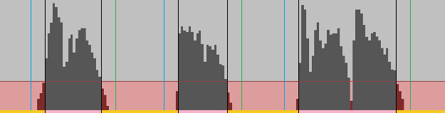

Screens and Controls
Note 1: For parameters that can be specified in profile commands, both the header for specification and the values are provided.
Example 1: Cue (cu=0-1,1) → Valid values are '0' and '1', default value is '1'.
Example 2: Max Count [Block] (mb=1-3000,3000) → Valid values are integers from '1' to '3000', default value is '3000'.
Example 3: Block Name (fn="string","") → Valid values are any string, default value is no string. When specifying in text, enclose the string in double quotes (").
Example 4: Playback (pl="0-3000" or pl="0-3000:0-1500","") → Valid values are a string of integers between '0' and '3000' or a string of an integer between '0' and '3000' + colon (:) + an integer between '0' and '1500'. Default value is no string. When specifying in text, enclose the value in double quotes (").
Note 2: For items with command aliases defined, values are provided.
Example: Select All (CMDA:SELECTALL) → The command alias for Select All is 'SELECTALL'.
Main Screen
Performs file import/export, list operations, Block playback, and more.
[Menu Bar]
-
File:
- Open: Opens the "Open File" screen.
- Open Export Directory: Opens the Explorer and displays the location where the latest MP3/Text folders were created.
- Show Text Editor: Opens the "Text Editor" screen.
- Show VMP3: Opens the "VMP3" screen.
- Show Metadata: Opens the "Metadata" screen.
- Reassign: Opens the "Reassign" screen.
- Quit: Exits the program.
-
List:
- Undo: Restores the state after the previous operation.
- Redo: Restores the state after the next operation.
- Manage List: Opens the "Profiles [List]" screen.
-
Select Item:
- All (CMDA:SELECTALL): Selects all items in the list.
- None (CMDA:SELECTNONE): Deselects all items in the list.
- Reverse (CMDA:SELECTIO): Toggles the selection status of each item in the list.
-
Process Item:
- Duplicate (CMDA:COPY): Duplicates the selected Import MP3s.
- Remove (CMDA:REMOVE): Removes the selected Import MP3s.
-
Move: Moves the selected Import MP3s to the specified location.
- To Block Start (CMDA:MOVETOTOPINB): Moves to the start of each Block.
- To Block End (CMDA:MOVETOBOTTOMINB): Moves to the end of each Block.
- To List Start (CMDA:MOVETOTOP): Moves to the start of the list.
- To List End (CMDA:MOVETOBOTTOM): Moves to the end of the list.
- Up One Step (CMDA:MOVETOUPPER): Moves one position up in the list.
- Down One Step (CMDA:MOVETOLOWER): Moves one position down in the list.
-
Reorder: Sorts the selected Import MP3s.
- Name in Block (CMDA:ALPHABETIZEINB): Sorts by name within each Block.
- Reverse in Block (CMDA:REVERSEINB): Reverses the order within each Block.
- Shuffle in Block (CMDA:SHUFFLEINB): Randomly shuffles within each Block.
- Name in List (CMDA:ALPHABETIZE): Sorts by name in the list.
- Reverse in List (CMDA:REVERSE): Reverses the order in the list.
- Shuffle in List (CMDA:SHUFFLE): Randomly shuffles in the list.
- Split (CMDA:SPLIT): Creates a new Block starting with the selected Import MP3s and splits the Block.
- Merge (CMDA:MERGE): Merges the Block where the first Import MP3 is selected with the Block above it.
- Reblock (CMDA:REBLOCK): Creates a new Block with the selected Import MP3s.
- Convert (CMDA:CONVERT): Creates new Import MP3s for each Cue within the range of the selected Import MP3s.
- Compress (CMDA:COMP): Creates new Import MP3s by compressing the selected Import MP3s.
- Decompress (CMDA:DECOMP): Creates new Import MP3s for each element of the selected Import MP3s.
- Virtualize (CMDA:VIRTUALIZE): Copies the selected Import MP3s to the "VMP3" screen.
-
Show Item:
-
All: Displays the specified item among all items, excluding history.
- Start: Shows the first Import MP3.
- End: Shows the last Import MP3.
- Previous IMP3: Shows the previous Import MP3.
- Next IMP3: Shows the next Import MP3.
- Previous Block: Shows the previous Block.
- Next Block: Shows the next Block.
-
Selected: Displays the specified item among the selected items, excluding history.
- Start: Shows the first selected Import MP3.
- End: Shows the last selected Import MP3.
- Previous IMP3: Shows the previous selected Import MP3.
- Next IMP3: Shows the next selected Import MP3.
- Previous Block: Shows the previous selected Block.
- Next Block: Shows the next selected Block.
-
Playback: Displays the currently playing item.
- IMP3: Shows the currently playing Import MP3.
- Focus: Activates the list and enables all shortcut keys related to list operations.
- Reset Column Widths: Resets the column widths in the list to their default values.
- Clear: Clears all items in the list.
-
Settings:
- General Settings: Opens the "General Settings" screen.
- Manage Commands: Opens the "Profiles [Command]" screen.
- Manage Keys: Opens the "Profiles [Key]" screen.
- Manage Execution Profiles: Opens the "Profiles [Execution]" screen.
- Input Command: Activates the command input box.
- Save Settings: Saves the current settings.
- Clear Sequential Run Items: Clears any remaining sequential run items.
-
Help:
- Manual: Opens the user manual.
- Command Reference: Opens the "Command Reference" screen.
- About: Opens the "About" screen.
[Playback Controls]
- Stop: Stops playback.
- Pause: Pauses playback.
- Play: Starts playback.
- Skip Backward [Long]: Rewinds playback position. Length is determined by "Long Seek Time" (pw)
- Skip Backward [Short]: Rewinds playback position. Length is determined by "Short Seek Time" (pu).
- Skip Forward [Short]: Advances playback position. Length is determined by "Short Seek Time" (pu).
- Skip Forward [Long]: Advances playback position. Length is determined by "Long Seek Time" (pw).
- Seek Bar: Displays current playback position within the playing Block.
- Time: Displays the playback time of the current Block.
-
Playback Order: Selects the playback order.
- Default: Plays Blocks in the order of the list numbers.
- Random: Plays Blocks randomly.
- Repeat(list): Plays Blocks in order, repeating from the beginning after the end.
- Repeat(block): Repeats playback of one Block.
- Repeat(imp3): Repeats playback of one Import MP3.
- Once(block): Plays to the end of one Block, then pauses.
- Once(imp3): Plays to the end of one Import MP3, then pauses.
Note: Playback operates on a Block basis. All Import MP3s within a Block are decoded and become playable if the total size is within 300MB.
[Main List]
- #: Displays the number of Blocks and Import MP3s.
- MP3: Displays the name of the Import MP3s. Import MP3s derived from Virtual MP3s are marked with an asterisk (*). For individual fade/silence addition specifications (qd=10,qmt=0-2,qmw=1), "f" and "s" are appended, respectively. Labels are also displayed if present (qa=1,qd=6).
- Time [IMP3]: Displays the length of the Import MP3s. If silence addition is specified (sj=1/qmt=0,2), the length including the silence addition is shown, with "s" appended depending on the silence addition position (sq=0-3/qsq=0-3).
- Brate: Displays the bit rate of the Import MP3s. Import MP3s with variable bit rates are marked with a "v".
- Srate: Displays the sample rate of the Import MP3s.
- Chan: Displays the channel mode of the Import MP3s (ST: Stereo/JS: JointStereo/DC: Dual Channel/MO: Mono).
- Cue: Displays the number of Cues in the Block.
- Export: Displays the number of Export MP3s in the Block.
- Status: Displays the state of the Blocks.
- Block Name: Displays the name of the Blocks. For individual Cue specifications (qa=2,qd=11,qqt=0-4,qqw=1), "t", "i", "s", or "e" is appended depending on the time specification, item boundary, silence detection, or equal interval Cue, respectively. Labels are also displayed if present (qa=2, qd=6).
- Time [Block]: Displays the length of the Blocks.
- Folder: Displays the name of the export folders.
- MP3 [Export]: Displays the name of the Export MP3s.
- MP3 [Move]: Displays the name of the Import MP3s after moving (mo=1).
- Text: Displays the name of the text file with the specifications for the Import MP3s.
[Lower Screen Controls]
- Execution Profile List: Selects the profile to apply for execution.
- Reset (rs=1, CMDA:RESET): Clears all items in the list.
- Command: Displays and inputs commands.
- Export Directory: Displays the path of the folder where MP3/Text folders will be created. Files can be dropped into the box to specify the path (dt=1).
- Block Name (CMDA:NAMEB): Specifies the name of the Block. Specifying the string "<N>" will result in Block names consisting only of sequential numbers.
- Folder Name (CMDA:NAMEMF): Specifies the name of the MP3 folder.
- Start (ex=1, CMDA:EXECUTE): Starts execution.
- Status: Displays the applied parameters and the state of the list.
[Shortcut Keys and Others]
- [Ctrl]+[Shift]+[1]-[4]: Displays parameters of the current execution profile in the command input box.
- [Ctrl]+[Alt]+[1]-[6]: Displays values for general settings such as "MP3 Folder Structure", "MP3 Folder Name", "VMP3 Folder Name", "Text Folder Name", "Add Tag", and "Verify Length" in the command input box.
- [Ctrl]+[NumPad 1]-[NumPad 9]: Displays strings from the "Profiles [Key]" screen in the command input box.
- [Ctrl]+[NumPad 0]: Opens the "Profiles [Key]" screen.
- [Ctrl]+[NumPad +]/[NumPad -]: Changes the profile for shortcut key assignments.
- [Ctrl]+[Shift]+[P]: Converts command aliases in the command input box to parameter descriptions.
- [Ctrl]+[Shift]+[T]: Displays the string from the command input box in the "Text Editor" screen.
- [Ctrl]+[Alt]+[P]: If the command alias in the command input box includes the path of a text file, displays the file location in the Explorer.
- [Ctrl]+[F]: Prepares a profile for searching Import MP3 names (la=1,lc=1,ld=4) and displays the "Profiles [List]" screen.
- [Ctrl]+[Shift]+[F]: Prepares a profile for filtering Import MP3 names (la=1,ld=4) and displays the "Profiles [List]" screen.
- [Ctrl]+[X]: Cuts the selected Import MP3s from the list.
- [Ctrl]+[C]: Copies the selected Import MP3s from the list.
- [Ctrl]+[V]: Pastes the most recently cut/copied Import MP3s/Virtual MP3s just below the most recently selected position in the list.
- [Insert]: Pastes the cut/copied Import MP3s at the most recently right-clicked position.
- [Ctrl]+[Insert]: Pastes the cut/copied Virtual MP3s from the "VMP3" screen at the most recently right-clicked position.
- [Ctrl]+[Alt]+[I]: Adjusts the Cues of the selected Blocks and splits them (CMDA:SPLITC)
- [Ctrl]+[Alt]+[U]: Adjusts the Cues of the selected Blocks and merges them (CMDA:MERGEC)
- [Ctrl]+[Alt]+[B]: Adjusts the Cues of the selected Blocks and creates new Blocks (CMDA:REBLOCKC)
- [Ctrl]+[Alt]+[Q]: Converts the selected Import MP3s excluding unassigned Cues for export (CMDA:CONVERTC)
- [Ctrl]+[Alt]+[G]: Compresses the selected Import MP3s without applying fade (fd) and silence addition (sj) (CMDA:COMPC)
- [Ctrl]+[Alt]+[H]: Decompresses the selected Import MP3s without applying fade (fd) and silence addition (sj) (CMDA:DECOMPC)
- [Ctrl]+[Alt]+[E]: Virtualizes the selected Import MP3s without applying fade (fd) and silence addition (sj) (CMDA:VIRTUALIZEC)
- [Ctrl]+[-]: Fixes the fade (fd) and silence addition (sj) of the selected Import MP3s (CMDA:FIXFS)
- [Ctrl]+[Alt]+[-]: Unfixes the fade (fd) and silence addition (sj) of the selected Import MP3s (CMDA:UNFIXFS).
- [Ctrl]+[:]: Fixes the Cues of the selected Blocks (CMDA:FIXCUE)
- [Ctrl]+[Alt]+[:]: Unfixes the Cues of the selected Blocks (CMDA:UNFIXCUE)
- [Ctrl]+[Alt]+[R]: Opens the "Profiles [Command]" screen.
- [Ctrl]+[Shift]+[M]: Organizes the elements of the selected Import MP3s.
- [Ctrl]+Dragging MP3 Files/VMP3s: Adds the MP3s once as a Block to the list (ig=1).
- TXT Files Drop: Reads each line of the file as "Add Tag [General Settings]" (TAG) values and applies them to the metadata of the selected Import MP3s (Character Encoding: UTF-8 without BOM).
- [Ctrl]+TXT Files Drop: Reads each line of the file as absolute paths of image files and applies them to the metadata of the selected Import MP3s (Character Encoding: UTF-8 without BOM).
- [Shift]+TXT Files Drop: Reads each line of the file as lyrics and applies them to the metadata of the selected Import MP3s (Character Encoding: UTF-8 without BOM).
- [Alt]+TXT Files Drop: Reads each line of the file as "Add Tag [General Settings]" (TAG) values and applies them randomly to the metadata of the selected Import MP3s (Character Encoding: UTF-8 without BOM).
- JPG/PNG/GIF Files Drop: Applies image files to the metadata of the selected Import MP3s.
- [Alt]+JPG/PNG/GIF Files Drop: Applies image files randomly to the metadata of the selected Import MP3s.
- [Alt]+Dragging Selected Items in the List: Reorders the Import MP3s.
- [Ctrl]+[Alt]+Dragging Selected Items in the List: Reorders the Blocks.
- [Shift]+Selecting from execution profile list: Changes the profile while retaining the list.
- [F3]: Displays the execution profile list.
- [F4]: Displays the command input box history.
- [Ctrl]+[Shift]+[F2]: Resets.
- [Ctrl]+[Shift]+[F5]: Starts execution.
- Right-Click on List: Displays the context menu.
- [Shift]+Right-Click on List: Displays the context menu while retaining the selection state.
- [Ctrl]+Right-Click on List: Right-clicks without displaying the context menu.
- [Shift]+[-]: Changes the display format of the time in the list.
- Dragging the First Column (# Column) of the List: Selects multiple items at once.
- [F8]: Displays the playback order list.
- [Ctrl]+[F8]: Changes playback order.
- [Ctrl]+[Alt]+[F8]: Allows/disallows random selection of the destination when switching playback Blocks.
- [F9]: Toggles between play and pause.
- [Shift]+[F9]: Stops playback.
- [Ctrl]+[Left]/[Right]: Moves playback position forward or backward by "Short Seek Time" (pu).
- [Ctrl]+[Shift]+[Left]/[Right]: Moves playback position forward or backward by "Long Seek Time" (pw).
- [Ctrl]+[Alt]+[Left]/[Right]: Moves playback position to the previous or next frame.
- [Ctrl]+[Up]/[Down]: Moves playback position to the previous or next Import MP3.
- [Ctrl]+[Shift]+[Up]/[Down]: Moves playback position to the previous or next Block.
- [Ctrl]+[/]: If the playback position is not at the boundary of an Import MP3, splits the Import MP3 and applies individual specifications if fade (fd) and silence addition (sj) are applied (qd=10,qmt=0-2,qmw=1,qms=1).
- [Ctrl]+[\]: If the playback position is at the boundary of an Import MP3, merges the Import MP3 and applies individual specifications if fade (fd) and silence addition (sj) are applied (qd=10,qmt=0-2,qmw=1,qms=1).
- [Ctrl]+[Alt]+[/]: If the playback position is not at the boundary of an Import MP3, splits the Import MP3 and applies individual specifications if fade (fd) and silence addition (sj) are applied (qd=10,qmt=0-2,qmw=1,qms=1), then resumes playback.
- [Ctrl]+[Alt]+[\]: If the playback position is at the boundary of an Import MP3, merges the Import MP3 and applies individual specifications if fade (fd) and silence addition (sj) are applied (qd=10,qmt=0-2,qmw=1,qms=1), then resumes playback.
- [Alt]+Skip Backward [Long] Button: Moves playback position to the previous Block.
- [Alt]+Skip Backward [Short] Button: Moves playback position to the previous Import MP3.
- [Alt]+Skip Forward [Short] Button: Moves playback position to the next Import MP3.
- [Alt]+Skip Forward [Long] Button: Moves playback position to the next Block.
- Double-Click on List: Moves playback position to the clicked Import MP3.
- [Ctrl]+Double-Click on List: Moves playback position to the clicked Import MP3 and pauses.
- [Ctrl]+Stop Button: Moves playback position to the start of the Block and pauses.
- [Ctrl]+[F9]: Displays the waveform of the currently playing Block on the "Waveform" screen.
- [Shift]+[NumPad +]/[NumPad -]: Changes the playback volume (linked with OS volume mixer).
- Playback Time Label (to the right of the seek bar) Click: Changes the time display format of the label.
- [Ctrl]+[Shift]+[Alt]+[Up]/[Down]/[Left]/[Right]/[Space]: Changes the screen position.
- [Ctrl]+[Shift]+[Alt]+[R]: Restores the screen size to its default.
"Profiles [Execution]" Screen
Manages profiles applied to file import/export and operations.
Access via [Menu Bar] > [Settings] > [Manage Execution Profiles].
[Top/Bottom of Screen]
- Profile List: Selects the profile to apply.
- Profile Name (sn="string",""): Specifies the name of the selected profile.
- Add: Adds a new profile to the profile list.
- Remove: Removes the selected profile from the profile list.
- Update: Applies changes to the parameters, closes the screen, switches the profile, and updates the list.
- Save: Applies changes to the parameters and closes the screen.
- Cancel: Discards changes to the parameters and closes the screen.
[General 1 Tab]
-
Execute (ae=0-1,0): Chooses how to start the execution.
- Manual (ae=0): Starts the execution by pressing the start button.
- Auto (ae=1): Starts the execution automatically after importing Import MP3s.
-
Notify Non-executable Items (ii=0-1,1): Chooses whether to notify about items that cannot be executed.
- Not Notify (ii=0): No notification will be given.
- Notify (ii=1): Notification will be given.
-
Re-execution (eo=0-1,1): Chooses whether to allow multiple executions of the same list.
- Disallow (eo=0): Allows execution only once.
- Allow (eo=1): Allows multiple executions.
-
Quit after Execution (tp=0-1,0): Chooses whether to terminate the program after execution.
- Disallow (tp=0): Does not terminate the program.
- Allow (tp=1): Terminates the program after execution if there are no issues.
-
Decoding Timing (db=0-1,0): Chooses when to decode MP3 files.
- At List Addition (db=0): Decodes when adding MP3 files to the list.
- Pre Execution (db=1): Decodes when starting execution.
- Parallel Processing (pd=1-6,1): Chooses the upper limit for parallel processing during decoding and exporting of MP3s.
-
Decoding Target (pv=0-1,0): Chooses the type of MP3 files to decode.
- CBR (pv=0): Targets constant bit rate (CBR) MP3 files.
- CBR+VBR (pv=1): Targets both constant bit rate (CBR) and variable bit rate (VBR) MP3 files.
-
Decoding Acceleration (da=0-2,1): Chooses whether to omit decoding of some frames to speed up the process.
- Disallow (da=0): Decodes all frames.
- Allow [Light] (da=1): Omits decoding of high-volume frames to shorten processing time.
- Allow (da=2): Omits decoding of high-volume frames to shorten processing time further than [Light]. However, some files may not be decoded correctly.
-
Screen View (sv=0-1,0): Chooses the format of the main screen.
- Default (sv=0): Default screen format.
- Simple (sv=1): Simplified screen format.
-
List Column Width (ac=0-1,0): Chooses the column width in the list.
- Long (ac=0): Some columns move outside the screen and are displayed by horizontal scrolling.
- Short (ac=1): All columns are displayed within the screen.
-
Scroll (sc=0-2,0): Chooses whether to scroll the list to display the specified location after execution.
- Disallow (sc=0): No scrolling.
- Start (sc=1): Displays the top of the execution result.
- End (sc=2): Displays the bottom of the execution result.
-
Show Execution Result (cd=0-1,1): Chooses whether to notify the result of execution at the end.
- Not Notify (cd=0): No notification of execution result.
- Notify (cd=1): Notifies the execution result.
-
History (hr=0-1,0): Chooses how to display execution history in the list.
- Not Show (hr=0): Does not keep execution history in the list.
- Show (hr=1): Keeps execution history in the list.
- Max Undo Count (uc=0-10,3): Specifies the upper limit for the number of undo actions in the "Undo" menu in the menu bar.
[General 2 Tab]
- Short Seek Time (pu=0.01-1800.00,5.00): Specifies the length of time in seconds for moving playback position when pressing the Skip Backward [Short] and Skip Forward [Short] buttons.
- Long Seek Time (pw=0.01-1800.00,300.00): Specifies the length of time in seconds for moving playback position when pressing the Skip Backward [Long] and Skip Forward [Long] buttons.
-
Reframe on Playback (fp=0-1,0): Chooses whether to reconstruct frames to reduce noise caused by MP3 editing.
- Disallow (fp=0): Does not reconstruct frames.
- Allow (fp=1): Reconstructs frames.
-
Playback State after List Update (ps=0-1,0): Specifies the playback state after updating the list.
- Not Retain (ps=0): Does not retain the playback state.
- Retain (ps=1): Retains the playback state before the list update.
[Import 1 Tab]
-
MP3 (im=0-2,2): Chooses whether to allow or disallow the addition of Import MP3s by importing MP3 files.
- Disallow (im=0): Does not allow importing MP3 files.
- Allow (im=1): Allows importing MP3 files.
- Dialog (im=2): Shows the selection screen for importing methods.
-
VMP3 (iv=0-2,2): Chooses whether to allow or disallow the addition of Import MP3s by importing Virtual MP3s.
- Disallow (iv=0): Does not allow importing Virtual MP3s.
- Allow (iv=1): Allows importing Virtual MP3s.
- Dialog (iv=2): Shows the selection screen for importing methods.
-
Text (it=0-2,2): Chooses whether to allow or disallow the addition of Import MP3s by importing text files.
- Disallow (it=0): Does not allow importing text files.
- Allow (it=1): Allows importing text files.
- Dialog (it=2): Shows the selection screen for importing methods.
-
Import Location [Block] (iw=0-2,1): Chooses the Block position where Import MP3s will be added.
- Start (iw=0): Adds to the first Block.
- End (iw=1): Adds to the last Block.
- Any (iw=2): Adds to any Block within the list.
-
Import Location [IMP3] (il=0-2,1): Chooses the position within the Block where Import MP3s will be added.
- Start (il=0): Adds to the beginning of the Block.
- End (il=1): Adds to the end of the Block.
- Any (il=2): Adds to any position within the Block. Dropping at Block boundaries will add to the end of the upper Block, while holding down the Shift key while dropping will add to the beginning of the lower Block.
-
Import as Block (ig=0-1,0): Chooses whether to create a Block from the Import MP3s when added to the list.
- Disallow (ig=0): Adds the Import MP3s to the specified Block.
- Allow (ig=1): Adds the Import MP3s as a new Block.
-
Reassign Screen (dd=0-1,0): Chooses whether to show the "Reassign" screen if the MP3 file does not exist at the specified path after adding the Import MP3s.
- Disallow (dd=0): Does not show the "Reassign" screen.
- Allow (dd=1): Opens the "Reassign" screen.
- Duplicate (cb=0-3000,0): Specifies the number of copies of the added Block to create and add to the list.
- Distribute (ip=0-1500,0): Distributes the Import MP3s added to the list across each Block by the specified number.
- Auto Reblock (ar=0-1500,0): After adding the Import MP3s, changes the Block configuration to limit the number of Import MP3s to the specified maximum.
[Import 2 Tab]
- Max Count [Block] (mb=1-3000,3000): Specifies the maximum number of Blocks for processing.
- Max Count [IMP3] (ms=1-1500,1500): Specifies the maximum number of Import MP3s per Block.
-
Text Encoding (ie=0-3,2): Chooses the character encoding for reading text files.
- SJIS (ie=0): Uses Shift_JIS.
- EUC (ie=1): Uses EUC.
- UTF-8 (ie=2): Uses UTF-8 without BOM.
- Unicode (ie=3): Uses Unicode without BOM.
-
Target (tt=0-3,3): Selects the target when specifying Import MP3s via text (it=1).
- None (tt=0): Does not specify Import MP3s.
- MP3 (tt=1): Targets MP3 files.
- VMP3 (tt=2): Targets Virtual MP3s.
- MP3+VMP3 (tt=3): Targets both MP3 files and Virtual MP3s.
-
Specify Duplicates (ti=0-1,1): Chooses whether to allow or disallow duplicate specifications when specifying Import MP3s via text (it=1,tt=1-3).
- Disallow (ti=0): Allows each Import MP3 to be specified only once.
- Allow (ti=1): Allows multiple specifications of the same Import MP3.
-
Folder Name Matching Definition (tg=0-4,1): Specifies the method for checking folder names when specifying Import MP3s via text (it=1,tt=1-3).
- Any (tg=0): Does not check for matching folder names.
- Exact (tg=1): Targets folders that exactly match the specified name.
- Prefix (tg=2): Targets folders whose names start with the specified name.
- Suffix (tg=3): Targets folders whose names end with the specified name.
- Partial (tg=4): Targets folders that contain the specified name.
-
File Name Matching Definition (tn=0-4,1): Specifies the method for checking file names when specifying Import MP3s via text (it=1,tt=1-3).
- Any (tn=0): Does not check for matching file names; sequentially imports MP3s from the target folder.
- Exact (tn=1): Targets Import MP3s that exactly match the specified name.
- Prefix (tn=2): Targets Import MP3s whose names start with the specified name.
- Suffix (tn=3): Targets Import MP3s whose names end with the specified name.
- Partial (tn=4): Targets Import MP3s that contain the specified name.
-
Folder Hierarchy Matching Verification (th=0-1,1): Specifies the method for checking the folder hierarchy structure when specifying Import MP3s via text (it=1,tt=1-3).
- Not Verify (th=0): Considers all files in the hierarchy under the target folder.
- Verify (th=1): Only considers files within the target folder.
-
Random Specification (tw=0-1,0): Chooses whether to allow or disallow random selection when specifying Import MP3s via text (it=1,tt=1-3).
- Disallow (tw=0): Specifies Import MP3s in the order stored within the target folder.
- Allow (tw=1): Specifies Import MP3s randomly.
[Import 3 Tab]
-
Reassign (ri=0-2,2): Chooses whether to allow reassign of Import MP3s from the "Reassign" screen.
- Disallow (ri=0): Does not allow reassign of MP3 files/Virtual MP3s for Import MP3s.
- Allow [Auto] (ri=1): Allows reassign of MP3 files/Virtual MP3s for Import MP3s. The Import MP3s to be reassigned will be automatically determined.
- Allow [Manual] (ri=2): Allows reassign of MP3 files/Virtual MP3s for Import MP3s. The Import MP3s to be reassigned will be determined by selecting items from the list on the "Reassign" screen.
-
Auto Reassign Target (rt=0-2,1): If "Reassign" is "Allow [Auto]" (ri=1), chooses the scope for reassign.
- Any (rt=0): Targets all Import MP3s.
- Unassigned (rt=1): Targets Import MP3s that have not been specified with MP3 files/Virtual MP3s.
- Selected (rt=2): Targets Import MP3s selected on the main screen.
-
Reassign Condition (rc=0-1,0): Chooses the condition for reassigning MP3 files/Virtual MP3s for Import MP3s.
- None (rc=0): Specifies any MP3 file/Virtual MP3.
- Name (rc=1): Specifies MP3 files/Virtual MP3s that match the name of the Import MP3.
-
Match Definition (rl=0-4,1): If "Reassign Condition" is "Name" (rc=1), chooses the method for name verification.
- Any (rl=0): Specifies any MP3 file/Virtual MP3.
- Exact (rl=1): Specifies MP3 files/Virtual MP3s that exactly match the name of the Import MP3.
- Prefix (rl=2): Specifies MP3 files/Virtual MP3s whose names start with the Import MP3 name.
- Suffix (rl=3): Specifies MP3 files/Virtual MP3s whose names end with the Import MP3 name.
- Partial (rl=4): Specifies MP3 files/Virtual MP3s that contain the Import MP3 name.
-
Reassign [Multi] (mi=0-1,1): Chooses whether to allow reassign of MP3 files/Virtual MP3s for multiple Import MP3s.
- Disallow (mi=0): Does not allow reassign for multiple Import MP3s.
- Allow [Auto] (mi=1): Allows reassign for multiple Import MP3s. The Import MP3s to be reassigned will be automatically determined.
-
Auto Reassign Target [Multi] (mt=0-2,1): If "Reassign [Multi]" is "Allow [Auto]" (mi=1), chooses the scope for reassign.
- Any (mt=0): Targets all Import MP3s.
- Unassigned (mt=1): Targets Import MP3s that have not been specified with MP3 files/Virtual MP3s.
- Selected (mt=2): Targets Import MP3s selected on the main screen.
-
Reassign Condition [Multi] (mc=0-1,0): Chooses the condition for reassigning MP3 files/Virtual MP3s for multiple Import MP3s.
- None (mc=0): Specifies any MP3 file/Virtual MP3.
- Name (mc=1): Specifies MP3 files/Virtual MP3s that match the name of the Import MP3.
-
Match Definition [Multi] (ml=0-4,0): If "Reassign Condition [Multi]" is "Name" (mc=1), chooses the method for name verification.
- Any (ml=0): Specifies any MP3 file/Virtual MP3.
- Exact (ml=1): Specifies MP3 files/Virtual MP3s that exactly match the name of the Import MP3.
- Prefix (ml=2): Specifies MP3 files/Virtual MP3s whose names start with the Import MP3 name.
- Suffix (ml=3): Specifies MP3 files/Virtual MP3s whose names end with the Import MP3 name.
- Partial (ml=4): Specifies MP3 files/Virtual MP3s that contain the Import MP3 name.
-
Auto Reassign Origin (mh=0-1,0): If "Reassign [Multi]" is "Allow [Auto]" (mi=1), chooses the starting point for reassigning MP3 files/Virtual MP3s.
- First Item (mh=0): Starts from the beginning of the list.
- First Reassigned Item (mh=1): Targets items below the list items where reassign was performed (ri=1-2).
-
Duplicated Source (dr=0-1,0): Chooses whether to allow duplicate specifications when reassigning MP3 files/Virtual MP3s for multiple Import MP3s.
- Disallow (dr=0): Does not allow duplicate specifications of MP3 files/Virtual MP3s.
- Allow (dr=1): Allows duplicate specifications of MP3 files/Virtual MP3s.
-
Random (rw=0-1,0): Chooses whether to allow random reassign of MP3 files/Virtual MP3s.
- Disallow (rw=0): Does not allow random reassign.
- Allow (rw=1): Allows random reassign.
-
Retain Length Limit (rf=0-1,0): Chooses whether to retain the length of Import MP3s after reassign.
- Not Retain (rf=0): Does not retain the length.
- Retain (rf=1): Retains the length of the Import MP3s after reassigning with MP3 files/Virtual MP3s.
[Export 1 Tab]
-
MP3 (em=0-1,0): Chooses whether to allow MP3 files export.
- Disallow (em=0): Does not allow MP3 files export.
- Allow (em=1): Allows MP3 files export.
-
VMP3 (ev=0-2,0): Chooses whether to allow Virtual MP3s export.
- Disallow (ev=0): Does not allow Virtual MP3s export.
- Allow (ev=1): Allows Virtual MP3s export.
- Allow [Temp] (ev=2): Allows Virtual MP3s export. The exported Virtual MP3s are available until the program ends.
-
Text (et=0-1,0): Chooses whether to allow text files export.
- Disallow (et=0): Does not allow text files export.
- Allow (et=1): Allows text files export.
-
Move (mo=0-1,0): Chooses whether to allow moving MP3 files.
- Disallow (mo=0): Does not allow MP3 files moving.
- Allow (mo=1): Allows MP3 files moving.
-
Export Directory Default/Specify (dt=0-1,0): Chooses where to create the MP3/Text folders.
- Default (dt=0): Uses the folder where the initially imported MP3/Text files are located as the export directory.
- Specify (dt=1): Chooses a specific folder for the export directory.
- Specify Export Path (ed="string",""): Sets the specified export path (dt=1) by selecting from the "Browse for Folder" screen (click the box to display) or dragging and dropping file/folder into the box.
- MP3 Folder Name (mf="string",""): Specifies the name of the folder for MP3 files export. If "Move" is "Allow" (mo=1), this folder will be the destination for moved Import MP3s; otherwise, it will be the destination for Export MP3s.
- VMP3 Folder Name (rn="string",""): Specifies the name of the folder for Virtual MP3s export.
- Text Folder Name (tf="string",""): Specifies the name of the folder for text files export.
-
Folder Creation (ff=0-1,0): Chooses how to create MP3/VMP3/Text folders.
- Per Execution (ff=0): Creates a new Export folder for each execution.
- Per Location (ff=1): Creates only one folder at the export directory and use it for all executions.
[Export 2 Tab]
- Block Name (fn="string",""): Specifies the name of the Block.
-
Add IMP3 Name (as=0-2,0): Chooses whether to add the Import MP3 name to the Export MP3 name.
- Disallow (as=0): Does not add the Import MP3 name.
- Start (as=1): Adds the Import MP3 name at the beginning of the Export MP3 name.
- End (as=2): Adds the Import MP3 name at the end of the Export MP3 name.
-
Add Block Name (ab=0-2,0): Chooses whether to add the Block name to the Export MP3 name.
- Disallow (ab=0): Does not add the Block name.
- Start (ab=1): Adds the Block name at the beginning of the Export MP3 name.
- End (ab=2): Adds the Block name at the end of the Export MP3 name.
- Shorten Name (sf=-100-100,0): Shortens the Export MP3 name by the specified number of characters. Negative values shortens from the beginning of the name.
-
Moved File Name (cn=0-3,0): Chooses how to change file names when moving Import MP3s (mo=1).
- None (cn=0): Does not change the file name.
- Prepend Block Name (cn=1): Adds the Block name at the beginning of the file name after moving.
- Append Block Name (cn=2): Adds the Block name at the end of the file name after moving.
- Replace with Block Name (cn=3): Changes the file name to the Block name after moving.
-
Move Duplicates (cf=0-1,0): If "Move" is "Allow" (mo=1) and there are duplicates in the list, chooses how to handle file creation.
- Not Create (cf=0): Does not create duplicates.
- Create (cf=1): Copies and creates duplicates in the move folder.
-
Tags on Copy (ct=0-1,0): Chooses how to handle ID3 tags when exporting MP3s without cutting or joining.
- Not Retain (ct=0): Discards ID3 tags from the Import MP3 and creates the Export MP3.
- Retain (ct=1): Retains ID3 tags from the Import MP3 and creates the Export MP3.
-
Reframe on Export (fe=0-1,0): Chooses whether to reconstruct frames to reduce noise caused by MP3 editing.
- Disallow (fe=0): Does not reconstruct frames.
- Allow (fe=1): Reconstructs frames.
-
Add Sequential Number [Block] (bn=0-2,2): Adds sequential number to the Block name.
- None (bn=0): Does not add sequential number.
- Add (bn=1): Adds sequential number.
- Auto (bn=2): If Block name (fn="string") is specified and there are two or more Blocks, adds sequential number. Specifying the Block name as sequential number only is applicable (fn="<N>").
-
Position of Sequential Number [Block] (bp=0-1,1): Chooses where to place the sequential number in the Block name.
- Start (bp=0): Adds the sequential number at the beginning.
- End (bp=1): Adds the sequential number at the end.
- Digits for Sequential Number [Block] (bf=1-5,2): Specifies the number of digits for the sequential number added to the Block name.
-
Scope for Sequential Number [Block] (ba=0-2,1): Specifies the range for adding sequential numbers.
- Block (ba=0): Adds sequential numbers per Block.
- List (ba=1): Adds sequential numbers to all items in the list.
- All (ba=2): Adds sequential numbers to all Export MP3s in all executions.
-
Add Sequential Number [EMP3] (en=0-2,2): Adds sequential number to the Export MP3 name.
- None (en=0): Does not add sequential number.
- Add (en=1): Adds sequential number.
- Auto (en=2): If no text-based name is specified and each Block has two or more Cues, adds sequential number.
-
Position of Sequential Number [EMP3] (ep=0-1,1): Chooses where to place the sequential number in the Export MP3 name.
- Start (ep=0): Adds the sequential number at the beginning.
- End (ep=1): Adds the sequential number at the end.
- Digits for Sequential Number [EMP3] (ef=1-5,2): Specifies the number of digits for the sequential number added to the Export MP3 name.
-
Scope for Sequential Number [EMP3] (ea=0-2,0): Specifies the range for adding sequential numbers.
- Block (ea=0): Adds sequential numbers per Block.
- List (ea=1): Adds sequential numbers to all items in the list.
- All (ea=2): Adds sequential numbers to all Export MP3s in all executions.
[Export 3 Tab]
-
Text Destination (td=0-2,0): Chooses the destination for text export.
- File (td=0): Exports to text files.
- Editor (td=1): Exports to the "Text Editor" screen.
- File+Editor (td=2): Exports to both text files and the "Text Editor" screen.
-
Text Encoding (ee=0-3,2): Chooses the character encoding for text file export.
- SJIS (ee=0): Uses Shift_JIS.
- EUC (ee=1): Uses EUC.
- UTF-8 (ee=2): Uses UTF-8 without BOM.
- Unicode (ee=3): Uses Unicode without BOM.
-
Export CUE (te=0-2,0): Chooses how to export text in CUE format.
- None (te=0): Does not export text.
- Single Text (te=1): Exports a single text file with results from all Blocks.
- Individual Text (te=2): Exports individual text files for each Block's results.
-
Export M3U (tu=0-2,0): Chooses how to export text in M3U format.
- None (tu=0): Does not export text.
- Single Text (tu=1): Exports a single text file with results from all Blocks.
- Individual Text (tu=2): Exports individual text files for each Block's results.
-
Export CJC (tc=0-2,0): Chooses how to export text in CJAMC format.
- None (tc=0): Does not export text.
- Single Text (tc=1): Exports a single text file with results from all Blocks.
- Individual Text (tc=2): Exports individual text files for each Block's results.
-
Export CJJ (tj=0-2,0): Chooses how to export text in CJAMJ format.
- None (tj=0): Does not export text.
- Single Text (tj=1): Exports a single text file with results from all Blocks.
- Individual Text (tj=2): Exports individual text files for each Block's results.
-
Export CJM (tm=0-2,0): Chooses how to export text in CJAM format.
- None (tm=0): Does not export text.
- Single Text (tm=1): Exports a single text file with results from all Blocks.
- Individual Text (tm=2): Exports individual text files for each Block's results.
-
CJM Time Format (ts=0-1,1): Chooses the time format for text export in CJAM.
- As CUE (ts=0): Uses mm:ss:ff format, like CUE/CJAMC.
- Milliseconds (ts=1): Converts ff to milliseconds and uses that format.
-
Renumber Folder (tx=0-1,1): Specifies how to record folder numbers in text.
- Disallow (tx=0): Maintains the specified folder number.
- Allow (tx=1): Organizes and renumbers the folder number.
-
VMP3 Path Conversion (tv=0-1,1): Specifies how to record Virtual MP3 paths in text.
- Retain (tv=0): Records the Virtual MP3 path as is.
- Convert (tv=1): Corrects the Virtual MP3 path to a desktop path.
[Operation 1 Tab]
-
Fade (fd=0-1,1): Chooses whether to apply fade effects to Import MP3s.
- Disallow (fd=0): Does not apply fade effects.
- Allow (fd=1): Applies fade effects.
- Max Count of Fades (mw=1-1500,1500): Specifies the maximum number of fades to apply to Import MP3s per Block.
- Fade-In Length (is=0.00-10000.00,0.00): Specifies the length of the fade-in effect in seconds.
- Fade-In Start Volume (ib=-15.0-90.0,0.0): Specifies the volume decrease at the start of the fade-in effect.
- Fade-In End Volume (ic=-15.0-90.0,0.0): Specifies the volume decrease at the end of the fade-in effect.
-
Fade-In Shape(if=0-2,0): Specifies how the volume changes during the fade-in.
- Linear(if=0): Applies a uniform fade effect with a constant rate of change.
- Ease-In(if=1): Starts with a gradual change and accelerates toward the end.
- Ease-Out(if=2): Starts with a rapid change and slows down toward the end.
- Fade-Out Length (os=0.00-10000.00,0.00): Specifies the length of the fade-out effect in seconds.
- Fade-Out Start Volume (ob=-15.0-90.0,0.0): Specifies the volume decrease at the start of the fade-out effect.
- Fade-Out End Volume (oc=-15.0-90.0,0.0): Specifies the volume decrease at the end of the fade-out effect.
-
Fade-Out Shape(of=0-2,0): Specifies how the volume changes during the fade-out.
- Linear(of=0): Applies a uniform fade effect with a constant rate of change.
- Ease-In(of=1): Starts with a gradual change and accelerates toward the end.
- Ease-Out(of=2): Starts with a rapid change and slows down toward the end.
-
Silence (sj=0-1,1): Chooses whether to add silence intervals to Import MP3s.
- Disallow (sj=0): Does not add silence intervals.
- Allow (sj=1): Adds silence intervals.
- Max Count of Silences (mg=1-1500,1500): Specifies the maximum number of silence intervals to apply to Import MP3s per Block.
- Silence Value (sl=0.00-7200.00,0.00): Specifies the length of the silence interval.
-
Silence Value Unit (su=0-1,0): Chooses how to calculate the silence interval length.
- Seconds (su=0): Adds a silence interval of the specified length in seconds.
- Times (su=1): Adds a silence interval with a length calculated by multiplying the original length (so) by the specified factor. The maximum length that can be added is 7200 seconds.
-
Silence Position (sq=0-3,1): Chooses the position to add the silence interval.
- Prepend (sq=0): Adds a silence interval at the beginning of each Import MP3.
- Append (sq=1): Adds a silence interval at the end of each Import MP3.
- Replace (sq=2): Replaces each Import MP3 with a silence interval.
- Both (sq=3): Adds a silence interval at both the beginning and the end of each Import MP3.
[Operation 2 Tab]
-
Cue (cu=0-1,1): Chooses whether to allow Cue specification.
- Disallow (cu=0): Does not allow Cue specification.
- Allow (cu=1): Allows Cue specification.
- Max Count of Cues (md=1-1500,1500): Specifies the maximum number of Cues per Block.
-
Add Cue [Time] (bt=0-1,1): Chooses whether to allow adding Cues based on time specification.
- Disallow (bt=0): Does not add Cues.
- Allow (bt=1): Adds Cues.
- Max Count of Cues [Time] (mk=1-1500,1500): Specifies the maximum number of Cues per Block based on time specification.
-
Origin [Time] (tl=0-1,0): Chooses the start point for Cue specification.
- Start (tl=0): Starts from the beginning of the Block.
- End (tl=1): Starts from the end of the Block.
- Shift [Time] (to=-100.00-18000.00,0.00): Moves Cues forward or backward by the specified number of seconds.
-
Add Cue [Item Boundary] (bi=0-1,0): Chooses whether to allow adding Cues based on item boundaries.
- Disallow (bi=0): Does not add Cues.
- Allow (bi=1): Adds Cues.
- Max Count of Cues [Item Boundary] (mu=1-1500,1500): Specifies the maximum number of Cues per Block based on item boundaries.
-
Boundary Unit (ix=0-2,0): Chooses the unit for adding boundaries.
- IMP3 (ix=0): Adds boundaries for Import MP3s.
- IMP3+Silence (ix=1): Adds boundaries for Import MP3s and any added silence intervals (sj/qmt=0,2).
- Elements of IMP3 (ix=2): Adds boundaries for elements of Import MP3s.
[Operation 3 Tab]
-
Add Cue [Silence Detection] (bs=0-1,0): Chooses whether to allow adding Cues based on silence detection.
- Disallow (bs=0): Does not add Cues.
- Allow (bs=1): Adds Cues.
- Max Count of Cues [Silence Detection] (mr=1-1500,1500): Specifies the maximum number of Cues per Block based on silence detection.
- Threshold [Gain] (gt=0-100,30): Specifies the volume threshold for detecting silence.
- Threshold [Time] (ft=5-300,15): Specifies the time threshold for detecting silence.
- Offset [Start] (bo=0-100,15): Specifies the offset value from the start of the silence to the Cue.
- Offset [End] (ao=0-100,15): Specifies the offset value from the end of the silence to the Cue.
-
Cue Position [Silence Detection] (cl=0-4,1): Chooses the position where Cues are added based on silence detection.
- None (cl=0): Does not add Cues.
- All (cl=1): Add Cues at both the start and end of the silence intervals.
- Start of Silence (cl=2): Adds Cues at the start of the silence intervals.
- Middle of Silence (cl=3): Adds Cues at the middle of the silence intervals. "Cue Position Ratio" (cr) is enabled.
- End of Silence (cl=4): Adds Cues at the end of the silence intervals.
-
Export Silence (es=0-2,1): Chooses the method for exporting silence intervals.
- Disallow (es=0): Does not export silence intervals.
- Allow (es=1): Exports silence intervals.
- Allow [Express] (es=2): Exports silence intervals. Appends a string for silence notation (se="string") to the end of the Export MP3 name.
-
Trim (tr=0-1,0): If "Add Cue [Silence Detection]" is "Allow" (bs=1), chooses whether to add Cues only for the end of silence interval at the beginning of the Block and the start of silence interval at the end of the Block.
- Disallow (tr=0): Does not trim.
- Allow (tr=1): Trims.
-
Add Cues [Equal Interval] (be=0-1,0): Chooses whether to allow adding Cues based on equal intervals.
- Disallow (be=0): Does not add Cues.
- Allow (be=1): Adds Cues.
- Max Count of Cues [Equal Interval] (me=1-1500,1500): Specifies the maximum number of Cues per Block based on equal intervals.
- Interval Value (dn=0.01-18000.00,1.00): Specifies the number of parts/seconds/frames for determining the interval.
-
Interval Value Unit (du=0-2,0): Chooses the unit for the interval value.
- Count (du=0): Adds a specified number of Cues.
- Seconds (du=1): Adds Cues at specified second intervals.
- Frames (du=2): Adds Cues at specified frame intervals.
-
Origin [Equal Interval] (dl=0-1,0): Chooses the start point for Cue specification.
- Start (dl=0): Starts from the beginning of the Block.
- End (dl=1): Starts from the end of the Block.
- Shift [Equal Interval] (do=-100.00-18000.00,0.00): Moves Cues forward or backward by the specified number of seconds.
[Shortcut Keys]
- [Ctrl]+[Shift]+[C]: Copies the parameters of the selected profile to the clipboard.
- [Ctrl]+[Alt]+[C]: Copies the parameters of the selected profile to the clipboard, excluding default values.
- [Shift]+Add Button: Creates a new profile by copying the parameters of the selected profile and adds it to the list.
- [Shift]+Update Button: Updates the selected profile while maintaining the list.
"Profiles [List]" Screen
Manages profiles related to list item operations.
Access via [Menu Bar] > [List] > [Manage List].
[Top/Bottom of Screen]
- Profile List: Selects the profile to apply.
- Profile Name (in="string",""): Specifies the name of the selected profile.
- Add: Adds a new profile to the profile list.
- Remove: Removes the selected profile from the profile list.
- Run: Applies changes to the parameters, closes the screen, and performs list item operations.
- Save: Applies changes to the parameters and closes the screen.
- Cancel: Discards changes to the parameters and closes the screen.
[Selection 1 Tab]
-
Item Unit (la=0-2,1): Specifies the unit for applying the selection condition.
- None (la=0): Does not select.
- IMP3 (la=1): Applies condition to Import MP3s.
- Block (la=2): Applies condition to Blocks.
-
Block Definition (lb=0-1,0): If "Item Unit" is "Block" (la=2) and "Selection Scope" is "Selected" (lc=2-3), specifies the definition of Blocks considered as selected.
- Any Selected (lb=0): Blocks with one or more selected Import MP3s are considered selected.
- All Selected (lb=1): Blocks with all Import MP3s selected are considered selected.
-
Selection Scope (lc=0-3,3): Specifies the range for applying the selection condition.
- Block (lc=0): Applies condition to each Block.
- List (lc=1): Applies condition to the entire list.
- Block [Selected] (lc=2): Applies condition to selected items in each Block.
- List [Selected] (lc=3): Applies condition to selected items in the entire list.
-
Selection Condition (ld=0-9,0): Specifies the condition for selection.
- All (ld=0): Selects all items.
- Executable (ld=1): Selects items that can be executed.
- Assigned (ld=2): Selects items that have assigned MP3 files.
- Newest (ld=3): Selects items recently added to the list.
- Name (ld=4): Selects items based on a specified name.
- Length (ld=5): Selects items based on a specified length in seconds.
- Area (ld=6): Selects items within a specified range in the list.
- Label (ld=7): Selects items based on a specified label.
- Shift (ld=8): Selects items relative to the position of selected items.
- Random (ld=9): Selects items randomly.
-
Invert Condition (le=0-1,0): Inverts the selection condition.
- Disallow (le=0): Does not invert the condition.
- Allow (le=1): Inverts the condition.
- Name String (lf="string",""): Specifies the string for the name specification (ld=4).
-
Name Match Definition (lg=0-5,1): Specifies the condition for matching the name specification string (ld=4).
- Any (lg=0): Matches all items regardless of the specified string. All items except history will be selected.
- Exact (lg=1): Matches items with names exactly equal to the specified string.
- Prefix (lg=2): Matches items with names starting with the specified string.
- Suffix (lg=3): Matches items with names ending with the specified string.
- Partial (lg=4): Matches items with names containing the specified string.
- Regex (lg=5): Matches items with names that match the specified regular expression pattern.
- Length (lh=0.00-18000.00,0.00): Specifies the threshold for the length specification (ld=5).
-
Above/Below (li=0-1,0): Specifies the condition for the length specification (ld=5).
- Above (li=0): Selects items with a length greater than or equal to the threshold.
- Below (li=1): Selects items with a length less than or equal to the threshold.
[Selection 2 Tab]
- Start Number [Block] (lj=1-3000,1): Specifies the number of the first Block for the area specification(ld=6).
- Start Number [IMP3] (lk=1-1500,1): Specifies the number of the first Import MP3 for the area specification (ld=6).
-
End Position (ll=0-1,0): Specifies how to determine the range for the area specification (ld=6).
- Number (ll=0): Specifies the number of the last item to determine the range.
- Count (ll=1): Specifies the number of items to select and determine the range.
- End Number [Block] (lm=1-3000,1): If "End Position" is "Number" (ll=0), specifies the number of the last Block.
- End Number [IMP3] (ln=1-1500,1): If "End Position" is "Number" (ll=0), specifies the number of the last Import MP3.
- End Count (lo=1-3000,1): If "End Position" is "Count" (ll=1), specifies the number of items to select.
- Skip (lq=0-3000,0): When performing selection for the area specification (ld=6), after selecting the item, skips the specified number of items before selecting the next item.
-
Invert (lr=0-1,0): Specifies the starting point for the area specification (ld=6).
- Disallow (lr=0): Starts from the beginning of the list and Block.
- Allow (lr=1): Starts from the end of the list and Block.
[Selection 3 Tab]
- Label String (ls="string",""): Specifies the string for the label specification (ld=7).
-
Label Match Definition (lsi=0-5,1): Specifies the condition for matching the label specification string (ld=7).
- Any (lsi=0): Matches all items regardless of the specified string. All items except history will be selected.
- Exact (lsi=1): Matches items with labels exactly equal to the specified string.
- Prefix (lsi=2): Matches items with labels starting with the specified string.
- Suffix (lsi=3): Matches items with labels ending with the specified string.
- Partial (lsi=4): Matches items with labels containing the specified string.
- Regex (lsi=5): Matches items with labels that match the specified regular expression pattern.
- Shift Value (lt=0-3000,1): Specifies the width of the shift from the selected item for the shift specification (ld=8).
-
Shift Direction (lu=0-1,0): Specifies the direction of the shift from the selected item for the shift specification (ld=8).
- Downward (lu=0): Shifts downward.
- Upward (lu=1): Shifts upward.
- Random Count (lv=0-1500,1): Specifies the number of items for the random specification (ld=9).
-
Previous Selection (lx=0-3,0): Specifies how to apply previously selected items before applying the selection conditions.
- Not Apply (lx=0): Does not apply previously selected items.
- Or (lx=1): Combines previously selected items with items selected by applying conditions. (Logical OR)
- And (lx=2): Selects items that are selected by both previously selected items and items selected by applying conditions. (Logical AND)
- Exclusive Or (lx=3): Combines previously selected items with items selected by applying conditions and excludes items that are selected by both. (Exclusive OR)
-
Select History (ly=0-1,0): Specifies whether to perform history selection if "Selection Condition" is "All" (ld=0).
- Disallow (ly=0): Does not select history
- Allow (ly=1): Selects history.
[Specification 1 Tab]
-
Specified Position (sps=0-1,1): Chooses whether to allow Specified Position specification.
- Disallow (sps=0): Does not allow Specified Position specification.
- Allow (sps=1): Allow Specified Position specification. Specified Position is specified for Blocks containing one or more selected Import MP3s.
-
Origin [SPS] (pso=0-5,0): Chooses the start point for Specified Position specification.
- Start of Block (pso=0): Starts from the beginning of the Block.
- End of Block (pso=1): Starts from the end of the Block.
- Start of Specified Area (pso=2): Starts from the beginning of the Specified Area.
- End of Specified Area (pso=3): Starts from the end of the Specified Area.
- Specified Position (pso=4): Starts from the current Specified Position.
- Playback Position (pso=5): Starts from the current playback position.
- Value [SPS] (psn=0.00-18000.00,0.00): Specifies the length from the origin (pso) to the Specified Position.
-
Unit [SPS] (psu=0-5,0): Chooses the method for calculating the length.
- Seconds (psu=0): Uses seconds as the unit of length.
- Frames (psu=1): Uses the number of frames as the unit of length.
- Count [IMP3] (psu=2): Uses the number of Import MP3s as the unit of length.
- Count [Cue] (psu=3): Uses the number of Cues as the unit of length.
- Ratio [Block] (psu=4): Uses the ratio of the Block's length as the unit of length.
- Ratio [Specified Area] (psu=5): Uses the ratio of the Specified Area's length as the unit of length.
-
Invert [SPS] (psr=0-1,0): Chooses the direction from the origin (pso) to the Specified Position.
- Disallow (psr=0): Specifies the Specified Position behind the origin (pso).
- Allow (psr=1): Specifies the Specified Position ahead of the origin (pso).
[Specification 2 Tab]
-
Specified Area (sar=0-1,1): Chooses whether to allow Specified Area specification.
- Disallow (sar=0): Does not allow Specified Area specification.
- Allow (sar=1): Allow Specified Area specification. Specified Area is specified for Blocks containing one or more selected Import MP3s.
-
Origin [SAR Start] (afo=0-5,0): Chooses the start point for determining the beginning of the Specified Area.
- Start of Block (afo=0): Starts from the beginning of the Block.
- End of Block (afo=1): Starts from the end of the Block.
- Start of Specified Area (afo=2): Starts from the beginning of the Specified Area.
- End of Specified Area (afo=3): Starts from the end of the Specified Area.
- Specified Position (afo=4): Starts from the current Specified Position.
- Playback Position (afo=5): Starts from the current playback position.
- Value [SAR Start] (afn=0.00-18000.00,0.00): Specifies the length from the origin (afo) to the beginning of the Specified Area.
-
Unit [SAR Start] (afu=0-5,0): Chooses the method for calculating the length.
- Seconds (afu=0): Uses seconds as the unit of length.
- Frames (afu=1): Uses the number of frames as the unit of length.
- Count [IMP3] (afu=2): Uses the number of Import MP3s as the unit of length.
- Count [Cue] (afu=3): Uses the number of Cues as the unit of length.
- Ratio [Block] (afu=4): Uses the ratio of the Block's length as the unit of length.
- Ratio [Specified Area] (afu=5): Uses the ratio of the Specified Area's length as the unit of length.
-
Invert [SAR Start] (afr=0-1,0): Chooses the direction from the origin (afo) to the beginning of the Specified Area.
- Disallow (afr=0): Specifies the beginning of the Specified Area behind the origin (afo).
- Allow (afr=1): Specifies the beginning of the Specified Area ahead of the origin (afo).
-
Origin [SAR End] (alo=0-6,0): Chooses the start point for determining the end of the Specified Area.
- Start of Block (alo=0): Starts from the beginning of the Block.
- End of Block (alo=1): Starts from the end of the Block.
- Start of Specified Area (alo=2): Starts from the beginning of the Specified Area.
- End of Specified Area (alo=3): Starts from the end of the Specified Area.
- Specified Position (alo=4): Starts from the current Specified Position.
- Playback Position (alo=5): Starts from the current playback position.
- Start of New Specified Area (alo=6): Starts from the beginning of the new Specified Area.
- Value [SAR End] (aln=0.00-18000.00,0.00): Specifies the length from the origin (alo) to the end of the Specified Area.
-
Unit [SAR End] (alu=0-5,0): Chooses the method for calculating the length.
- Seconds (alu=0): Uses seconds as the unit of length.
- Frames (alu=1): Uses the number of frames as the unit of length.
- Count [IMP3] (alu=2): Uses the number of Import MP3s as the unit of length.
- Count [Cue] (alu=3): Uses the number of Cues as the unit of length.
- Ratio [Block] (alu=4): Uses the ratio of the Block's length as the unit of length.
- Ratio [Specified Area] (alu=5): Uses the ratio of the Specified Area's length as the unit of length.
-
Invert [SAR End] (alr=0-1,0): Chooses the direction from the origin (alo) to the end of the Specified Area.
- Disallow (alr=0): Specifies the end of the Specified Area behind the origin (alo).
- Allow (alr=1): Specifies the end of the Specified Area ahead of the origin (alo).
-
Previous Specified Area (psa=0-2,0): Chooses how to apply the previous Specified Area.
- Not Apply (psa=0): Does not apply the previous Specified Area.
- Or (psa=1): Combines the previous Specified Area and the current Specified Area into one Specified Area (logical OR).
- And (psa=2): Defines the Specified Area as the intersection of the previous and current Specified Areas. (logical AND).
[Operation 1 Tab]
-
Item Unit (qa=0-2,0): Specifies the unit for applying the operation condition.
- None (qa=0): Does not operate.
- IMP3 (qa=1): Applies condition to Import MP3s.
- Block (qa=2): Applies condition to Blocks.
-
Block Definition (qb=0-1,0): If "Item Unit" is "Block" (qa=2), specifies the definition of Blocks considered as selected.
- Any Selected (qb=0): Blocks with one or more selected Import MP3s are considered selected.
- All Selected (qb=1): Blocks with all Import MP3s selected are considered selected.
-
Operation Scope (qc=0-1,1): Specifies the range for applying the operation condition.
- Block (qc=0): Applies condition to each Block.
- List (qc=1): Applies condition to the entire list.
-
Operation Condition (qd=0-13,0): Specifies the condition for operation.
- None (qd=0): Does not perform any operation.
- Duplicate (qd=1): Duplicates the selected items.
- Reorder (qd=2): Sorts the selected items.
- Split (qd=3): Creates a new Block starting with the selected Import MP3s and splits the Block.
- Merge (qd=4): Merges the Block where the first Import MP3 is selected with the Block above it.
- Reblock (qd=5): Creates a new Block composed of the selected Import MP3s.
- Label (qd=6): Adds/removes any string as a label to the selected items.
- Convert (qd=7): Creates new Import MP3s for each Cue within the selected range, modifying the Block composition. Items with fade (fd) and silence addition (sj) will have "Individual FS" (qd=10,qmt=0,qmw=1,qms=1) applied after conversion.
- Comp/Decomp (qd=8): Creates new Import MP3s from selected MP3s, modifying the Block composition. Items with fade (fd) and silence addition (sj) will have "Individual FS" (qd=10,qmt=0,qmw=1,qms=1) applied after compression/decompression.
- Stretch (qd=9): Adjusts the boundaries of the elements of the selected items to change their length.
- Individual FS (qd=10): Individually specifies fade/silence addition for selected items. Individual specifications take precedence over parameters (fd,sj).
- Individual Cue (qd=11): Individually specifies Cues for selected items. Individual specifications take precedence over parameters (bt,bi,bs,be).
- Virtualize (qd=12): Exports the selected items to the "VMP3" screen.
- Rename (qd=13): Renames the selected items.
[Operation 2 Tab]
- Duplicate Count (qf=0-1500,1): If "Operation Condition" is "Duplicate" (qd=1), specifies the number of items to duplicate.
-
Retention of Source (qg=0-1,1): If "Operation Condition" is "Duplicate" (qd=1), specifies whether to remove or retain the original items.
- Remove (qg=0): Removes the original items.
- Retain (qg=1): Retains the original items.
-
Selection Status on Duplication (qh=0-2,0): If "Operation Condition" is "Duplicate" (qd=1), specifies the selection status of the original and duplicated items.
- Source (qh=0): Selects the original items and deselects the duplicated items.
- Dest (qh=1): Deselects the original items and selects the duplicated items.
- Source+Dest (qh=2): Selects both the original and duplicated items.
-
Duplicate Destination (qht=0-1,0): Specifies the items used to determine the duplicate location.
- All Item (qht=0): Uses all items in the list to determine the duplicate location.
- Not Selected Item (qht=1): Uses unselected items in the list to determine the duplicate location.
-
Adjust Cue Positions (qhc=0-1,0): If "Operation Condition" is "Duplicate" (qd=1), specifies whether to adjust Cue positions.
- Disallow (qhc=0): Do not adjust Cue positions.
- Allow (qhc=1): Adjust Cue positions while keeping their relative locations within each IMP3.
-
Duplicate Destination Origin [Block] (qi=0-1,0): If "Operation Condition" is "Duplicate" (qd=1), specifies the starting point to determine the duplicate Block.
- List Start (qi=0): Uses the beginning of the list as the starting point.
- Selected Item (qi=1): Uses each selected item as the starting point, with the area below the starting point as the duplication location.
- Duplicate Destination Value [Block] (qj=0-3000,0): If "Operation Condition" is "Duplicate" (qd=1), specifies the width from the starting point to determine the duplicate Block.
-
Invert Duplicate Destination [Block] (qk=0-1,0): If "Operation Condition" is "Duplicate" (qd=1), specifies whether to invert the duplicate location determination method.
- Disallow (qk=0): Does not invert.
- Allow (qk=1): If "Duplicate Destination Origin" is "List Start" (qi=0), uses the end of the list; if the starting point is "Selected Item" (qi=1), uses the area above each selected item as the duplicate location.
-
Duplicate Destination Origin [IMP3] (ql=0-1,0): If "Operation Condition" is "Duplicate" (qd=1), specifies the starting point within the duplicate Block.
- Block Start (ql=0): Uses the beginning of the duplicate Block as the starting point.
- Selected Item (ql=1): Uses the position of each selected item within the Block as the starting point.
- Duplicate Destination Value [IMP3] (qm=0-1500,0): If "Operation Condition" is "Duplicate" (qd=1), specifies the width from the starting point to determine the position within the duplicate Block.
-
Invert Duplicate Destination [IMP3] (qn=0-1,0): If "Operation Condition" is "Duplicate" (qd=1), specifies whether to invert the duplicate location determination method.
- Disallow (qn=0): Does not invert.
- Allow (qn=1): If "Duplicate Destination Origin [IMP3]" is "List Start" (ql=0), uses the end of the Block; if the starting point is "Selected Item" (ql=1), uses the area above each selected item as the duplicate location.
-
Reorder Key (qo=0-3,0): If "Operation Condition" is "Reorder" (qd=2), specifies the condition for sorting.
- None (qo=0): No condition specified.
- Name (qo=1): Uses the item names as the condition.
- Length (qo=2): Uses the item lengths as the condition.
- Label (qo=3): Uses the item labels as the condition.
-
Reorder Order (qp=0-2,0): If "Operation Condition" is "Reorder" (qd=2), specifies the sorting order.
- Ascending (qp=0): Sorts in ascending order.
- Descending (qp=1): Sorts in descending order.
- Shuffle (qp=2): Sorts randomly.
-
Adjust Cue Positions (qpc=0-1,0): If "Operation Condition" is "Reorder" (qd=2), specifies whether to adjust Cue positions.
- Disallow (qpc=0): Do not adjust Cue positions.
- Allow (qpc=1): Adjust Cue positions while keeping their relative locations within each IMP3.
[Operation 3 Tab]
-
Cue Transfer [Split] (cs=0-2,0): If "Operation Condition" is "Split" or "Reblock" (qd=3,5), specifies the method for transferring time specification Cues (bt) and individually specified Cues (qa=2,qd=11,qqt=0-4,qqw=1).
- Disallow (cs=0): Does not transfer.
- Allow (cs=1): Transfers the Cues from the original Block to the new split Block.
- Allow [Adjust] (cs=2): Adjusts the time of the Cues from the original Block before transferring it to the new split Block.
-
Cue Transfer [Merge] (cm=0-2,0): If "Operation Condition" is "Merge" or "Reblock" (qd=4,5), specifies the method for transferring time specification Cues (bt) and individually specified Cues (qa=2,qd=11,qqt=0-4,qqw=1).
- Disallow (cm=0): Does not transfer.
- Allow (cm=1): Transfers the Cues from the merging source Block to the merging target Block.
- Allow [Adjust] (cm=2): Adjusts the time of the Cues from the merging source Block before transferring it to the merging target Block.
- Max Count of IMP3s per Block (qq=1-1500,1500): If "Operation Condition" is "Reblock" (qd=5), specifies the maximum number of Import MP3s allowed per Block.
-
Max Count of IMP3s per Block Unit (qr=0-1,0): If "Operation Condition" is "Reblock" (qd=5), specifies the unit for the maximum number of Import MP3s per Block.
- Count (qr=0): Confirms by count.
- Seconds (qr=1): Confirms by length in seconds.
- Label String (qs="string",""): If "Operation Condition" is "Label" (qd=6), specifies the string to be used as a label.
-
Label String Format (qsd=0-1,0): If "Operation Condition" is "Label" (qd=6), specifies the format of the label string.
- Single (qsd=0): Uses the string as the label as is.
- Multiple (qsd=1): Allows multiple labels by separating them with commas (,).
-
Label Operation (qt=0-1,1): If "Operation Condition" is "Label" (qd=6), specifies whether to add or remove the label.
- Remove (qt=0): Removes the label.
- Add (qt=1): Adds the label.
-
Convert Elements (qdw=0-1,1): If "Operation Condition" is "Convert" (qd=7), specifies the method of conversion.
- Export-specified (qdw=0): Uses the sections with specified export as Import MP3s.
- All (qdw=1): Uses all sections as Import MP3s.
-
Folder Number Labeling(qdf=0-1,0): If "Operation Condition" is "Convert" (qd=7), specifies whether to add each Cue's folder number as a label to converted items.
- Disallow(qdf=0): Does not add a label.
- Allow(qdf=1): Adds each Cue's folder number as a label to the converted items.
-
Cue State after Conversion (qdc=0-2,1): If "Operation Condition" is "Convert" (qd=7), specifies the state of the Cues after conversion.
- Retain (qdc=0): Retains the state of all Cues.
- Remove (qdc=1): Clears time specification Cues (bt) and apply time specification/item boundary/silence detection/equal interval Cue specifications (qa=2,qd=11,qqt=0,qqw=1,qqs=0).
- Remove and Adjust (qdc=2): Clears time specification Cues (bt) and apply time specification/item boundary/silence detection/equal interval Cue specifications (qa=2,qd=11,qqt=0,qqw=1,qqs=0). Adjusts the time of Cues not cleared and maintain the correspondence between Import MP3 and Cue positions.
[Operation 4 Tab]
-
Comp/Decomp (qcw=0-1,0): If "Operation Condition" is "Comp/Decomp" (qd=8), specifies the compression/decompression operation.
- Compress (qcw=0): Creates a new Import MP3 by compressing the selected Import MP3s into one.
- Decompress (qcw=1): Creates new Import MP3s for each element of the selected Import MP3s.
-
Application of Fade and Silence (qcs=0-1,1): If "Operation Condition" is "Comp/Decomp" (qd=8), specifies whether to apply fade (fd) and silence addition (sj) during compression/decompression.
- Not Apply (qcs=0): Does not apply fade and silence addition.
- Apply (qcs=1): Applies fade and silence addition.
-
Adjust Cue Positions (qcc=0-1,0): If "Operation Condition" is "Comp/Decomp" (qd=8), specifies whether to adjust Cue positions.
- Disallow (qcc=0): Do not adjust Cue positions.
- Allow (qcc=1): Adjust Cue positions while keeping their relative locations within each IMP3.
- Stretch Value (qsl=-10000.00-10000.00,0.00): If "Operation Condition" is "Stretch" (qd=9), specifies the number of seconds for stretching.
-
Stretch Position (qsp=0-2,0): If "Operation Condition" is "Stretch" (qd=9), specifies the position to stretch.
- Both (qsp=0): Stretches the beginning and end of the selected item.
- Start (qsp=1): Stretches the beginning of the selected item.
- End (qsp=2): Stretches the end of the selected item.
-
Adjust Cue Positions (qsc=0-1,0): If "Operation Condition" is "Stretch" (qd=9), specifies whether to adjust Cue positions.
- Disallow (qsc=0): Do not adjust Cue positions.
- Allow (qsc=1): Adjust Cue positions while keeping their relative locations within each IMP3.
-
Individual Specification Target [Fade/Silence] (qmt=0-2,0): If "Operation Condition" is "Individual FS" (qd=10), specifies the target for individual specification.
- Fade+Silence (qmt=0): Specifies both fade and silence addition.
- Fade (qmt=1): Specifies fade.
- Silence (qmt=2): Specifies silence addition.
-
Individual Specification Operation [Fade/Silence] (qmw=0-1,1): If "Operation Condition" is "Individual FS" (qd=10), specifies whether to cancel or apply the individual specification.
- Unspecify (qmw=0): Cancels the individual specification.
- Specify (qmw=1): Applies the individual specification.
-
Individual Specification Operation Way [Fade/Silence] (qms=0-2,1): If "Individual Specification Operation [Fade/Silence]" is "Specify" (qmw=1), specifies the method for the operation.
- Protect (qms=0): No fade/silence addition is applied in the individual specification.
- Fix (qms=1): Fixes the state of the applied parameters and specifies individually.
- Add (qms=2): Applies fade/silence and specifies individually.
[Operation 5 Tab]
-
Individual Specification Area [Fade] (qfs=0-1,0): If "Individual Specification Operation Way [Fade/Silence]" is "Add" (qms=2), specifies the area for the operation.
- All Area (qfs=0): Applies the operation to the entire Block.
- Specified Area (qfs=1): Applies the operation only to the Specified Area.
-
Individual Specification Unit in Area [Fade] (qfi=0-2,2): If "Individual Specification Operation Way [Fade/Silence]" is "Add" (qms=2), specifies the unit within the area for the operation.
- Whole (qfi=0): Treats the entire area (qfs) as a single unit.
- IMP3 (qfi=1): Applies the operation to each Import MP3 within the area (qfs).
- IMP3 [Selected] (qfi=2): Applies the operation only to the selected Import MP3 within the area (qfs).
- Max Count of Fades (qmf=1-1500,1500): Specifies the maximum number of fades to apply to Import MP3s per Block.
- Fade-In Length (qis=0.00-10000.00,0.00): Specifies the length of the fade-in effect in seconds.
- Fade-In Start Volume (qib=-15.0-90.0,0.0): Specifies the volume decrease at the start of the fade-in effect.
- Fade-In End Volume (qic=-15.0-90.0,0.0): Specifies the volume decrease at the end of the fade-in effect.
-
Fade-In Shape(qif=0-2,0): Specifies how the volume changes during the fade-in.
- Linear(qif=0): Applies a uniform fade effect with a constant rate of change.
- Ease-In(qif=1): Starts with a gradual change and accelerates toward the end.
- Ease-Out(qif=2): Starts with a rapid change and slows down toward the end.
- Fade-Out Length (qos=0.00-10000.00,0.00): Specifies the length of the fade-out effect in seconds.
- Fade-Out Start Volume (qob=-15.0-90.0,0.0): Specifies the volume decrease at the start of the fade-out effect.
- Fade-Out End Volume (qoc=-15.0-90.0,0.0): Specifies the volume decrease at the end of the fade-out effect.
-
Fade-Out Shape(qof=0-2,0): Specifies how the volume changes during the fade-out.
- Linear(qof=0): Applies a uniform fade effect with a constant rate of change.
- Ease-In(qof=1): Starts with a gradual change and accelerates toward the end.
- Ease-Out(qof=2): Starts with a rapid change and slows down toward the end.
-
Individual Specification Area [Silence] (qss=0-1,0): If "Individual Specification Operation Way [Fade/Silence]" is "Add" (qms=2), specifies the area for the operation.
- All Area (qss=0): Applies the operation to the entire Block.
- Specified Area (qss=1): Applies the operation only to the Specified Area.
-
Individual Specification Unit in Area [Silence] (qsi=0-2,2): If "Individual Specification Operation Way [Fade/Silence]" is "Add" (qms=2), specifies the unit within the area for the operation.
- Whole (qsi=0): Treats the entire area (qfs) as a single unit.
- IMP3 (qsi=1): Applies the operation to each Import MP3 within the area (qfs).
- IMP3 [Selected] (qsi=2): Applies the operation only to the selected Import MP3 within the area (qfs).
- Max Count of Silences (qmg=1-1500,1500): Specifies the maximum number of silence intervals to apply to Import MP3s per Block.
- Silence Value (qsv=0.00-7200.00,0.00): Specifies the length of the silence interval.
-
Silence Value Unit (qsm=0-1,0): Chooses how to calculate the silence interval length.
- Seconds (qsm=0): Adds a silence interval of the specified length in seconds.
- Times (qsm=1): Adds a silence interval with a length calculated by multiplying the original length by the specified factor. The maximum length that can be added is 7200 seconds.
-
Silence Position (qsq=0-3,1): Chooses the position to add the silence interval.
- Prepend (qsq=0): Adds a silence interval at the beginning of each Import MP3.
- Append (qsq=1): Adds a silence interval at the end of each Import MP3.
- Replace (qsq=2): Replaces each Import MP3 with a silence interval.
- Both (qsq=3): Adds a silence interval at both the beginning and the end of each Import MP3.
-
Adjust Cue Positions (qsb=0-1,0): If "Operation Condition" is "Individual FS" (qd=10), specifies whether to adjust Cue positions.
- Disallow (qsb=0): Do not adjust Cue positions.
- Allow (qsb=1): Adjust Cue positions while keeping their relative locations within each IMP3.
[Operation 6 Tab]
-
Individual Specification Target [Cue] (qqt=0-4,0): If "Operation Condition" is "Individual Cue" (qd=11), specifies the target for individual specification.
- All (qqt=0): Specifies time specification/item boundary/silence detection/equal interval Cues.
- Time (qqt=1): Specifies time specification Cues.
- Item Boundary (qqt=2): Specifies item boundary Cues.
- Silence Detection (qqt=3): Specifies silence detection Cues.
- Equal Interval (qqt=4): Specifies equal interval Cues.
-
Individual Specification Operation [Cue] (qqw=0-1,1): If "Operation Condition" is "Individual Cue" (qd=11), specifies whether to cancel or apply the individual specification.
- Unspecify (qqw=0): Cancels the individual specification.
- Specify (qqw=1): Applies the individual specification.
-
Individual Specification Operation Way [Cue] (qqs=0-2,1): If "Individual Specification Operation [Cue]" is "Specify" (qqw=1), specifies the method for the operation.
- Protect (qqs=0): Clears all Cues within the Block and specifies individually.
- Fix (qqs=1): Fixes the state of the applied parameters and specifies individually.
- Add (qqs=2): Adds Cues and specifies individually.
-
Individual Specification Area [Cue] (qsa=0-1,0): If "Individual Specification Operation Way [Cue]" is "Add" (qqs=2), specifies the area for the operation.
- All Area (qsa=0): Adds Cues to the entire Block.
- Specified Area (qsa=1): Adds Cues only to the Specified Area.
-
Individual Specification Unit in Area [Cue] (qqi=0-2,2): If "Individual Specification Area [Cue]" is "Add" (qqs=2), specifies the unit within the area for the operation.
- Whole (qqi=0): Treats the entire area (qqs) as a single unit.
- IMP3 (qqi=1): Applies the operation to each Import MP3 within the area (qqs).
- IMP3 [Selected] (qqi=2): Applies the operation only to the selected Import MP3 within the area (qqs).
- Max Count of Individual Specification Cues (qmd=1-1500,1500): Specifies the maximum number of Cues per Block.
-
Add Cue [Time; individual] (qbt=0-1,0): Chooses whether to allow adding Cues based on time specification.
- Disallow (qbt=0): Does not add Cues.
- Allow (qbt=1): Adds Cues.
- Max Count of Cues [Time; individual] (qmk=1-1500,1500): Specifies the maximum number of Cues per Block based on time specification.
-
Origin [Time; individual] (qso=0-5,0): Chooses the start point for Cue specification.
- Start of Block (qso=0): Starts from the beginning of the Block.
- End of Block (qso=1): Starts from the end of the Block.
- Start of Specified Area (qso=2): Starts from the beginning of the Specified Area.
- End of Specified Area (qso=3): Starts from the end of the Specified Area.
- Specified Position (qso=4): Starts from the current Specified Position.
- Playback Position (qso=5): Starts from the current playback position.
- Value [Time; individual] (qsn=0.00-18000.00,0.00): Specifies the length from the origin (qso) to the Cue.
-
Unit [Time; individual] (qsu=0-5,0): Chooses the method for calculating the length.
- Seconds (qsu=0): Uses seconds as the unit of length.
- Frames (qsu=1): Uses the number of frames as the unit of length.
- Count [IMP3] (qsu=2): Uses the number of Import MP3s as the unit of length.
- Count [Cue] (qsu=3): Uses the number of Cues as the unit of length.
- Ratio [Block] (qsu=4): Uses the ratio of the Block's length as the unit of length.
- Ratio [Specified Area] (qsu=5): Uses the ratio of the Specified Area's length as the unit of length.
-
Invert [Time; individual] (qsr=0-1,0): Chooses the direction from the origin (qso) to the Cue.
- Disallow (qsr=0): Specifies the Cue behind the origin (qso).
- Allow (qsr=1): Specifies the Cue ahead of the origin (qso).
- Shift [Time; individual] (qto=-100.00-18000.00,0.00): Moves Cues forward or backward by the specified number of seconds.
-
Add Cue [Item Boundary; individual] (qbi=0-1,0): Chooses whether to allow adding Cues based on item boundaries.
- Disallow (qbi=0): Does not add Cues.
- Allow (qbi=1): Adds Cues.
- Max Count of Cues [Item Boundary; individual] (qmu=1-1500,1500): Specifies the maximum number of Cues per Block based on item boundaries.
-
Boundary Unit (qix=0-2,0): Chooses the unit for adding boundaries.
- IMP3 (qix=0): Adds boundaries for Import MP3s.
- IMP3+Silence (qix=1): Adds boundaries for Import MP3s and any added silence intervals (sj/qmt=0,2).
- Elements of IMP3 (qix=2): Adds boundaries for elements of Import MP3s.
[Operation 7 Tab]
-
Add Cue [Silence Detection; individual] (qbs=0-1,0): Chooses whether to allow adding Cues based on silence detection.
- Disallow (qbs=0): Does not add Cues.
- Allow (qbs=1): Adds Cues.
- Max Count of Cues [Silence Detection; individual] (qmr=1-1500,1500): Specifies the maximum number of Cues per Block based on silence detection.
- Threshold [Gain] (qgt=0-100,30): Specifies the volume threshold for detecting silence.
- Threshold [Time] (qft=5-300,15): Specifies the time threshold for detecting silence.
- Offset [Start] (qbo=0-100,15): Specifies the offset value from the start of the silence to the Cue.
- Offset [End] (qao=0-100,15): Specifies the offset value from the end of the silence to the Cue.
-
Cue Position [Silence Detection; individual] (qcl=0-4,1): Chooses the position where Cues are added based on silence detection.
- None (qcl=0): Does not add Cues.
- All (qcl=1): Add Cues at both the start and end of the silence intervals.
- Start of Silence (qcl=2): Adds Cues at the start of the silence intervals.
- Middle of Silence (qcl=3): Adds Cues at the middle of the silence intervals. "Cue Position Ratio" (qcr) is enabled.
- End of Silence (qcl=4): Adds Cues at the end of the silence intervals.
- Ratio [Silence Detection; individual] (qcr=0-100,50): If "Cue Position [Silence Detection; individual]" is "Middle of Silence" (qcl=3), specifies the Cue position.
-
Add Cues [Equal Interval; individual] (qbe=0-1,0): Chooses whether to allow adding Cues based on equal intervals.
- Disallow (qbe=0): Does not add Cues.
- Allow (qbe=1): Adds Cues.
- Max Count of Cues [Equal Interval; individual] (qme=1-1500,1500): Specifies the maximum number of Cues per Block based on equal intervals.
- Interval Value [Equal Interval; individual] (qdn=0.01-18000.00,1.00): Specifies the number of parts/seconds/frames for determining the interval.
-
Interval Value Unit [Equal Interval; individual] (qdu=0-2,0): Chooses the unit for the interval value.
- Count (qdu=0): Adds a specified number of Cues.
- Seconds (qdu=1): Adds Cues at specified second intervals.
- Frames (qdu=2): Adds Cues at specified frame intervals.
-
Origin [Equal Interval; individual] (qdl=0-1,0): Chooses the start point for Cue specification.
- Start (qdl=0): Starts from the beginning of the area (qsa).
- End (qdl=1): Starts from the end of the area (qsa).
- Shift [Equal Interval; individual] (qdo=-100.00-18000.00,0.00): Moves Cues forward or backward by the specified number of seconds.
[Operation 8 Tab]
-
Fade and Silence on Virtualization (qvs=0-1,1): If "Operation Condition" is "Virtualize" (qd=12), specifies whether to apply fade (fd) and silence addition (sj) during virtualization.
- Not Apply (qvs=0): Does not apply fade and silence addition.
- Apply (qvs=1): Applies fade and silence addition.
-
Rename Way (qnw=0-1,1): If "Operation Condition" is "Rename" (qd=13), specifies the method of change.
- Reset (qnw=0): Resets the current name.
- Add (qnw=1): Adds or replaces with the specified name.
-
Add Way (qnp=0-2,2): If "Rename Way" is "Add" (qnw=1), specifies the method for adding names.
- Prepend (qnp=0): Adds the specified name to the beginning of the current name.
- Append (qnp=1): Adds the specified name to the end of the current name.
- Replace (qnp=2): Replaces the current name with the specified name.
- Rename String (qns="string",""): If "Rename Way" is "Add" (qnw=1), specifies the string to be added.
-
Rename Numbering (qnn=0-2,2): If "Rename Way" is "Add" (qnw=1), specifies how to add sequential numbers.
- None (qnn=0): Does not add sequential numbers.
- Add (qnn=1): Adds sequential numbers.
- Auto (qnn=2): Adds sequential numbers if there are two or more selected items.
-
Numbering Position (qnl=0-1,1): If "Rename Numbering" specifies adding sequential numbers (qnn=1-2), specifies the position of the sequential number.
- Start (qnl=0): Adds the sequential number at the beginning of the string (qns).
- End (qnl=1): Adds the sequential number at the end of the string (qns).
- Numbering Digits (qnd=1-5,2): If "Rename Numbering" specifies adding sequential numbers (qnn=1-2), specifies the number of digits for the sequential number.
- Numbering Initial Value (qni=1-3000,1): If "Rename Numbering" specifies adding sequential numbers (qnn=1-2), specifies the initial value of the sequential number.
-
Operate History (qu=0-1,0): Specifies how to handle history during item deletion (qf=0,qg=0).
- Disallow (qu=0): Does not delete history.
- Allow (qu=1): Deletes selected history.
-
Retain Selection (qv=0-1,1): Specifies the selection state of items after the operation.
- Deselect (qv=0): Deselects items.
- Select (qv=1): Retains the selection state.
[Shortcut Keys]
- [Ctrl]+[Shift]+[C]: Copies the parameters of the selected profile to the clipboard.
- [Ctrl]+[Alt]+[C]: Copies the parameters of the selected profile to the clipboard, excluding default values.
- [Shift]+Add Button: Creates a new profile by copying the parameters of the selected profile and adds it to the list.
"General Settings" Screen
Manages of settings common to the entire program.
Access via [Menu Bar] > [Settings] > [General Settings]
-
Save Settings: Chooses how to save settings upon program exit.
- Not Save: Settings will not be saved.
- Save: Settings will be saved.
- Dialog: Displays a screen to choose the save method.
-
Sequential Run: Selects whether to allow or disallow sequential run.
- Disallow: Sequential run is disallowed.
- Allow Once: Allows sequential run only once.
- Allow: Allows all sequential run.
- Max VMP3 Folder Count (30-50,30): Specifies the maximum number of folders for Virtual MP3s (ev=1).
- Max VMP3 Folder Count [Temp] (15-30,15): Specifies the maximum number of folders for temporary export Virtual MP3s (ev=2).
-
Confirm Dialog [Execute]: Chooses whether to display the confirmation screen at the start of execution.
- Hide: Does not display the confirmation screen.
- Show: Displays the confirmation screen.
-
Confirm Dialog [Reset]: Chooses whether to display the confirmation screen at reset.
- Hide: Does not display the confirmation screen.
- Show: Displays the confirmation screen.
-
Confirm Dialog [List]: Chooses whether to display the confirmation screen during list operations.
- Hide: Does not display the confirmation screen.
- Show: Displays the confirmation screen.
-
Confirm Dialog [Quit]: Chooses whether to display the confirmation screen at program exit.
- Hide: Does not display the confirmation screen.
- Show: Displays the confirmation screen.
-
Confirm Dialog [VMP3 List]: Chooses whether to display the confirmation screen during Virtual MP3 list operations.
- Hide: Does not display the confirmation screen.
- Show: Displays the confirmation screen.
-
MP3 Folder Structure [General Settings]: Specifies the folder structure created during MP3 files export. Represents each folder with half-width numbers (from '1' to '300') and hierarchies with "\". Multiple structures can be specified, separated by commas (,).
-
MP3 Folder Name [General Settings]: Specifies the folder name created during MP3 files export. Writes each folder name in any string enclosed by double quotes ("), and separates each with a comma (,). The n-th description separated by commas becomes the name of the folder number n in the MP3 Folder Structure.
-
VMP3 Folder Name [General Settings]: Specifies the folder names created during Virtual MP3s export. Encloses any string in double quotes (").
-
Text Folder Name [General Settings]: Specifies the folder names created during text files export. Encloses any string in double quotes (").
-
Add Tag [General Settings]: Specifies ID3v2.3 tags to be added to Export MP3s. Any of the following five items can be specified, separated by commas (,):
- Title: TIT2="string", "<filename>" to store the name of each Export MP3
- Artist Name: TPE1="string"
- Album Name: TALB="string"
- Image: APIC=JPEG/PNG/GIF file's "absolute path" or "relative path from the desktop"
- Text: USLT="string", specifies line breaks with "<br>"
-
Verify Length [General Settings]: Specifies the length of Blocks that are allowed for execution in one of the following formats: mm:ss (minutes:seconds), mm:ss:ff (minutes:seconds:CD-DA frames), mm:ss:fff (minutes:seconds:milliseconds). Multiple Block lengths can be specified, separated by commas (,). Export cannot be executed if the Block length does not match the specified length.
"Profiles [Command] " Screen
Edits and manages command aliases.
Access via [Menu Bar] > [Settings] > [Manage Commands].
[Shortcut Keys]
- [Ctrl]+[Shift]+[C]: Copies the parameters/reference path of the selected command to the clipboard.
- [Ctrl]+[Enter]: Applies changes.
- [Ctrl]+[F5]: Applies changes and runs the selected command.
- [Ctrl]+OK Button: Applies changes and runs the selected command.
"Profiles [Key] " Screen
Manages profiles for command input using shortcut keys.
Access via [Menu Bar] > [Settings] > [Manage Keys].
[Shortcut Keys]
- [F12]: Discards changes.
- [Ctrl]+[Numpad 0]: Discards changes.
- [Ctrl]+[Enter]: Applies changes.
- [Ctrl]+[F5]: Applies changes and updates the selected profile.
- [Ctrl]+[Numpad 1]-[Numpad 9]: Applies changes, updates the selected profile, and displays the command corresponding to the key in the command input box.
- [Ctrl]+[Alt]+[Numpad 1]-[Numpad 9]: Applies changes, updates the selected profile, displays the command corresponding to the key in the command input box, and runs it.
"Text Editor" Screen
Writes content in CUE/M3U/CJAMC/CJAMJ/CJAM formats, runs commands, and adds items to list.
Access via [Menu Bar] > [File] > [Show Text Editor].
Dropping CUE/M3U/CJC/CJJ/CJM files onto the screen will read and display the contents using the import character encoding (ie=0-3) of the currently applied profile. Dropping MP3 files will display the absolute paths.
[Shortcut Keys]
- [Ctrl]+[Space]: Focuses on the list in the main screen.
- [Ctrl]+[R]: Focuses on the command input box in the main screen.
- [Ctrl]+[Shift]+[Alt]+[Up]/[Down]/[Left]/[Right]/[Space]: Changes the screen position.
"Profiles [Text Edit]" Screen
Manages profiles for text search and replace in the "Text Editor" screen.
Access via [Text Editor Screen] > [Menu Bar] > [Search] > [Find and Replace]
[Top/Bottom of Screen]
- Profile List: Selects the profile to apply.
- Profile Name: Specifies the name of the selected profile.
- Add: Adds a new profile to the profile list.
- Remove: Removes the selected profile from the profile list.
- Perform: Applies changes to the parameters, closes the screen, and performs the search and replace operation.
- Save: Applies changes to the parameters and closes the screen.
- Cancel: Discards changes to the parameters and closes the screen.
[Find Tab]
-
Find: Chooses whether to allow or disallow the search operations.
- Disallow: Searches will not be performed.
- Allow: Searches will be performed.
-
Find Area: Selects the range of text to be searched.
- Whole Text: Searches all text.
- Selected Area: Searches only the selected text.
- Find String: Specifies the string to search for.
- Apply as Regular Expression: Applies the search string as a regular expression.
- Offset: "Offset" and "Skip" are used to limit the locations where the search string is considered a match. The offset specifies the number of positions from the beginning of the text to the first location where a match is considered.
- Skip: Skip specifies the number of positions from the current match to the next location where a match is considered.
[Replace Tab]
-
Replace: Chooses whether to allow or disallow the replace operations.
- Disallow: Replacement will not be performed.
- Allow: Replacement will be performed.
- Replace String: Specifies the string to replace with.
- Apply as Regular Expression: Applies the replace string as a regular expression. Control characters "\n" and "\t" will be effective.
- Apply Multiple Strings: Separates replacement strings with commas (,) to specify a different replacement string for each match of the search string.
[Number Tab]
-
Numbering: Chooses whether to allow or disallow the creation or addition of sequential numbers.
- Disallow: Sequential number creation/addition will not be performed.
- Allow: Sequential number creation/addition will be performed.
-
Numbering Target: Selects the target for adding sequential numbers.
- None: Creates a sequential number and inserts it at the cursor position.
- String: Adds sequential numbers to the string after performing search/replace.
-
Numbering Position: If "Numbering Target" is "String" selects where to add the sequential numbers.
- Start: Adds sequential numbers before the string.
- End: Adds sequential numbers after the string.
- Numbering Delimiter: Specifies the string to use as a delimiter for sequential numbers. Control characters "\n" and "\t" are effective.
- Numbering Digits: Specifies the number of digits in the sequential numbers.
- Numbering Initial Value: Specifies the initial number for the sequential numbers.
- Numbering Increment: Specifies the width to determine the next number in the sequence after adding sequential numbers.
- Numbering Count: Specifies the upper limit for the number of sequential numbers to add.
"VMP3" Screen
Displays a list of exported Virtual MP3s.
The folder list is displayed on the left, and the Virtual MP3 list for each folder is displayed on the right.
Access via [Menu Bar] > [File] > [Show VMP3].
[Shortcut Keys and Others]
- [NumPad 1]/[NumPad 4]: Selects an item in the folder list.
- [NumPad 2]/[NumPad 5]: Selects an item in the Virtual MP3 list.
- Folder Selection→[Enter]: Displays Virtual MP3s in the selected folder.
- Double-Click on the Folder List: Displays Virtual MP3s in the selected folder.
- Select VMP3→[Enter]: Imports to the main screen / "Reassign" screen.
- Select VMP3→[Ctrl]+[Enter]: Imports to the "Text Editor" screen.
- Select VMP3→[Ctrl]+[Alt]+[Enter]: Imports to the "Text Editor" screen and adds at mark (@) to the beginning of each path.
- Select VMP3→Drag and Drop to Other Screens: Imports to the main screen / "Reassign" screen / "Text Editor" screen.
- Select VMP3→Drag and Drop to the Folder List: Moves Virtual MP3s.
- Select VMP3→[Ctrl]+Drag and Drop to Folder List: Duplicates Virtual MP3s.
- Drag First Column (# Column) in the Virtual MP3 List: Selects multiple Virtual MP3s at once.
- Drop TXT Files onto Virtual MP3 List: Reads each line of the file as a description for "Add Tag [General Settings]" (TAG) values and applies as metadata for selected Virtual MP3s (Character Encoding: UTF-8 without BOM).
- [Ctrl]+Drop TXT Files onto the Virtual MP3 List: Reads each line of the file as an absolute path for image files and applies as metadata for selected Virtual MP3s (Character Encoding: UTF-8 without BOM).
- [Shift]+Drop TXT Files onto the Virtual MP3 List: Reads each line of the file as lyrics and applies as metadata for selected Virtual MP3s (Character Encoding: UTF-8 without BOM).
- [Alt]+Drop TXT Files onto the Virtual MP3 List: Reads each line of the file as "Add Tag [General Settings]" (TAG) values and applies randomly as metadata for selected Virtual MP3s (Character Encoding: UTF-8 without BOM).
- Drop JPG/PNG/GIF Files onto the Virtual MP3 List: Applies image files as metadata for selected Virtual MP3s.
- [Alt]+Drop JPG/PNG/GIF Files onto Virtual MP3 List: Applies image files randomly as metadata for selected Virtual MP3s.
- Right-Click on the List: Displays the context menu.
- [Shift]+Right-Click on the List: Displays the context menu while retaining the selection state.
- [Ctrl]+Right-Click on the List: Right-clicks without displaying the context menu.
- [Delete]: Deletes the selected item in the active list.
- [Insert]: Pastes the cut/copied Virtual MP3s into the Virtual MP3 list at the most recently right-clicked position.
- [Ctrl]+[Insert]: Pastes the cut/copied Import MP3s from the main screen into the Virtual MP3 list at the most recently right-clicked position.
- [Ctrl]+[P]: Randomly selects Virtual MP3s within the folder.
- [Ctrl]+[Shift]+[P]: Randomly selects Virtual MP3s.
- [Ctrl]+[Space]: Focuses on the list in the main screen.
- [Ctrl]+[R]: Focuses on the command input box in the main screen.
- [Ctrl]+[Shift]+[Alt]+[Up]/[Down]/[Left]/[Right]/[Space]: Changes the screen position.
"Metadata" Screen
Displays images and lyrics specified by text descriptions or ID3 tags during Block playback.
Access via [Menu Bar] > [File] > [Show Metadata]
[Shortcut Keys]
- [Ctrl]+[Space]: Focuses on the list in the main screen.
- [Ctrl]+[R]: Focuses on the command input box in the main screen.
- [Ctrl]+[Shift]+[Alt]+[Up]/[Down]/[Left]/[Right]/[Space]: Changes the screen position.
"Reassign" Screen
Reassigns MP3 files or Virtual MP3s to any Import MP3 in the list.
When "Reassign" is "Allow" (ri=1-2), access via [Menu Bar] > [File] > [Reassign]
[Shortcut Keys]
- [Ctrl]+[U]: Resets.
- [Ctrl]+[F5]: Applies.
- [Ctrl]+[W]: Cancels.
"Command Reference" Screen
Displays details of the specified parameters extracted from the operation manual.
Access via [Menu Bar] > [Help] > [Command Reference]
"Cue" Screen
Displays a list of Cues for each Block.
Access via [Right-Click on Main Screen List] > [Show Cue]
[List]
- #: Displays the Cue number.
- Attribute: Displays the source of the Cue specification. (T: Time Specification/ I: Item Boundary/ S: Silence Detection/ E: Equal Interval)
- Time: Displays the position of the Cue.
- Num: Displays the folder number.
- Export: Displays the export folder number.
- Name: Displays the Export MP3 name.
"Large File" Screen
Cuts a large MP3 file exceeding 300MB into appropriately sized segments.
The screen shows when importing a large MP3 file.
"Waveform" Screen
Displays the volume graph, which allows for editing audio and adding/removing Cues while viewing the waveform.
Access via [Right-Click on Main Screen List] > [Show Wave]
Note 1: Waveform displays on a Block basis. All Import MP3s within the Block are decoded and made available for display if the length is within 180 minutes.
Note 2: After pressing the Apply button, the fade/silence addition/Cue state for the corresponding Block will be changed to individual specification (qa=2,qd=10-11).
Note 3: The command applies only to the displayed Block. Other Blocks remain unchanged.
Note 4: Some parameters may have values that are not supported exclusively on the "Waveform" screen.
[Shortcut Keys and Others]
- [F9]: Plays/Pauses.
- [Space]: Plays/Pauses.
- [Shift]+[F9]/[Space]: Repeats playback.
- [Ctrl]+[F9]/[Space]: Plays Specified Area.
- [Left]/[Right]: Moves playback position forward or backward by "Short Seek Time" (pu).
- [Shift]+[Left]/[Right]: Moves playback position forward or backward by "Long Seek Time" (pw).
- [Up]/[Down]: Moves playback position to Specified Position/Area boundaries.
- [Ctrl]+[Left]/[Right]: Moves playback position to previous/next Cue.
- [Ctrl]+[Up]/[Down]: Moves playback position to previous/next Import MP3.
- [Ctrl]+[Alt]+[Left]/[Right]: Moves playback position to previous/next frame.
- [Shift]+[Alt]+[Left]/[Right]: Moves Specified Position to previous/next frame.
- [Alt]+[Left]/[Right]: Moves Cue at playback position to previous/next frame.
- [Alt]+[Up]/[Down]: Moves boundary of Import MP3 at playback position.
- [Ctrl]+[Shift]+[Left]/[Right]: Moves Cues within Specified Area to previous/next frame.
- [Ctrl]+[Shift]+[Up]/[Down]: Moves boundaries of Import MP3s within Specified Area.
- [Ctrl]+[Home]/[End]: Moves playback position to start/end.
- Mouse Wheel: Moves playback position forward or backward by "Short Seek Time" (pu).
- [Shift]+Mouse Wheel: Moves playback position forward or backward by "Long Seek Time" (pw).
- [Ctrl]+[Alt]+Mouse Wheel: Moves playback position to previous/next frame.
- [Shift]+[Alt]+Mouse Wheel: Moves Specified Position to previous/next frame.
- Mouse Left Drag: Specifies Specified Area.
- Mouse Right-Click: Adjusts Specified Area.
- [Shift]+Mouse Left-Click: Adjusts Specified Area.
- [Alt]+Mouse Wheel: Adjusts Specified Area.
- Mouse Double-Click: Specifies Specified Area of Import MP3 at Specified Position.
- [Alt]+Mouse Double-Click: Specifies Specified Area of Cue at Specified Position.
- [Alt]+Mouse Right-Click：Selects/Unselects Import MP3.
- [Shift]+[Alt]+[Up]/[Down]: Zooms in/out of the graph.
- [Ctrl]+Mouse Wheel: Zooms in/out of the graph.
- [Ctrl]+[F5]: Applies edits.
- [Ctrl]+[W]: Cancels edits.
- [Ctrl]+[Numpad 1]-[Numpad 9]: Displays strings from the "Profiles [Key]" screen in the command input box.
- [Ctrl]+[Alt]+[Numpad 1]-[Numpad 9]: Displays strings from the "Profiles [Key]" screen in the command input box and runs it.
- [Ctrl]+[Shift]+[1]: Displays applicable parameters in the command input box.
How to Detect Silence
To add Cues based on the silence detection (bs=1), follow the steps below:
|

Example of an audio waveform (Vertical axis: Volume, Horizontal axis: Time)
|
Applicable Parameters: gt (Threshold [Gain]), ft (Threshold [Time]), bo (Offset [Start]), ao (Offset [End]), cl (Cue Position), cr (Ratio for Cue Position)
- Areas where the volume is below the threshold `gt` are considered as candidates for silence intervals (indicated in red).
- Candidates that last for more than `ft` time are defined as silence intervals (indicated in orange).
- Areas that are not silence intervals are considered as sound intervals (indicated in pink). Boundaries between sound intervals and silence intervals are determined (indicated in black).
- Move the boundaries from the start of each silence interval by `bo` frames and from the end of each silence interval by `ao` frames towards the silence interval (indicated in green/blue).
-
Determine Cue position based on `cl` selection:
- None (cl=0): No Cue is added based on the silence detection.
- All (cl=1): Use both green and blue as the Cues.
- Start of Silence (cl=2): Use the green position as the Cue.
- Middle of Silence (cl=3): Select a point within each orange interval based on a ratio (cr=0-100, where '0' is the left end and '100' is the right end) and use it as the Cue.
- End of Silence (cl=4): Use the blue position as the Cue.
Note 1: If cl=1 and the positions of green and blue are swapped in Step 4 (i.e., blue moves to an earlier time than green), use the midpoint between green and blue as the Cue.
Note 2: If, in Step 4, green/blue moves into a sound interval (i.e., green/blue crosses black), use black as the Cue and ensure that the Cue is added within the silence interval.
How to Use Text
Text files in CUE, M3U, CJAMC, CJAMJ, and CJAM formats can be used to specify execution procedures and export results.
All formats are written in plain text and can be viewed or edited with general text editors.
CUE/CJAMC
These file formats are primarily used for specifying and exporting cut procedures.
REM comment
REM comment
REM comment
TITLE "Album"
FILE "sample.mp3" MP3
TRACK 01 AUDIO
TITLE "Track01"
INDEX 01 00:00:00
TRACK 02 AUDIO
TITLE "Track02"
INDEX 01 01:00:00
TRACK 03 AUDIO
TITLE "Track03"
INDEX 01 04:30:00
TRACK 04 AUDIO
TITLE "Track04"
INDEX 01 07:15:00
TRACK 05 AUDIO
TITLE "Track05"
INDEX 01 10:20:00
TRACK 06 AUDIO
TITLE "Track06"
INDEX 01 15:25:00
|
REM CJC si=0,sp=2,it=1,em=1
REM DIRINDEX 1\2,1\3,1\4
REM DIRNAME "main","subA","subB","subC"
TITLE "Album"
FILE "sample.mp3" MP3
TRACK 01 AUDIO
TITLE "2:Track01"
INDEX 01 00:00:00
TRACK 02 AUDIO
TITLE "3:Track02"
INDEX 01 01:00:00
TRACK 03 AUDIO
TITLE "4:Track03"
INDEX 01 04:30:00
TRACK 04 AUDIO
TITLE "0:"
INDEX 01 07:15:00
TRACK 05 AUDIO
TITLE "2:Track05"
INDEX 01 10:20:00
TRACK 06 AUDIO
TITLE "3:Track06"
INDEX 01 15:25:00
|
[About CUE]
CUE (*.cue) is a general-purpose file format used for purposes such as recording track information of audio files.
At the beginning, the target MP3 file is specified, followed by the description of each track's information.
[How to Use CUE in Cjam]
In Cjam, the following three items of the CUE format are used:
-
FILE "xxx.mp3" MP3:
Specify the absolute path of the target MP3 file, or a relative path based on the CUE file.
Paths using forward slash (/) and relative paths with periods for upper directories (..\) are invalid.
-
TITLE "xxx":
Specify the export file name.
-
INDEX 01 mm:ss:ff:
Specify the position of the Cue. mm = 00-arbitrary (minutes), ss = 00-59 (seconds), ff = 00-74 (frames, 1 frame = 1/75 second for CD-DA).
[About CJAMC]
CJAMC (*.cjc) is Cjam's proprietary file format, which extends the CUE format.
By adding descriptions to the CUE format, the following items can be specified:
- Specification of commands
- Specification of folder division for export files
Changing the file extension of a CJC file allows it to be used as a CUE file.
[CJAMC Description Method]
Note 1: The commands described at the beginning of the file are always read and applied, regardless of the value of "Import Text" (it).
Note 2: When reading the CUE/CJAMC format, a new Block is created and added for each Import MP3.
Note 3: TRACK descriptions that exceed the length of the Block are invalid.
Note 4: If the profile command includes the specified export path (ed="string"), "Export Directory Default/Specify" is automatically set to "Specify" (dt=1). Relative path descriptions for `ed` are not valid.
Note 5: Any CJAMC-specific descriptions are optional. If all CJAMC-specific descriptions are omitted, the export will be identical to that of the CUE format.
M3U/CJAMJ
These file formats are primarily used for specifying and exporting join procedures.
#comment(not used in Cjam)
#comment(not used in Cjam)
#comment(not used in Cjam)
#"file01"
C:\Users\Public\Music\Album\Track01.mp3
C:\Users\Public\Music\Album\Track02.mp3
C:\Users\Public\Music\Album\Track03.mp3
C:\Users\Public\Music\Album\Track04.mp3
#"file02"
C:\Users\Public\Music\Album\Track05.mp3
C:\Users\Public\Music\Album\Track06.mp3
C:\Users\Public\Music\Album\Track07.mp3
C:\Users\Public\Music\Album\Track08.mp3
#"file03"
C:\Users\Public\Music\Album\Track09.mp3
C:\Users\Public\Music\Album\Track10.mp3
C:\Users\Public\Music\Album\Track11.mp3
C:\Users\Public\Music\Album\Track12.mp3
C:\Users\Public\Music\Album\Track13.mp3
C:\Users\Public\Music\Album\Track14.mp3
C:\Users\Public\Music\Album\Track15.mp3
C:\Users\Public\Music\Album\Track16.mp3
|
#CJJ si=0,sp=2,it=1,em=1
#DIRINDEX 1\2,1\3,4
#DIRNAME "mainA","subA","subB","mainB"
#2:"file01":TALB="album",TPE1="artist"
C:\Users\Public\Music\Album\Track01.mp3
C:\Users\Public\Music\Album\Track02.mp3
C:\Users\Public\Music\Album\Track03.mp3
C:\Users\Public\Music\Album\Track04.mp3
#3:"file02":TALB="album",TPE1="artist"
C:\Users\Public\Music\Album\Track05.mp3
C:\Users\Public\Music\Album\Track06.mp3
C:\Users\Public\Music\Album\Track07.mp3
C:\Users\Public\Music\Album\Track08.mp3
#4:"file03":APIC="image\image01.jpg"
C:\Users\Public\Music\Album\Track09.mp3
C:\Users\Public\Music\Album\Track10.mp3
C:\Users\Public\Music\Album\Track11.mp3
C:\Users\Public\Music\Album\Track12.mp3
C:\Users\Public\Music\Album\Track13.mp3
C:\Users\Public\Music\Album\Track14.mp3
C:\Users\Public\Music\Album\Track15.mp3
C:\Users\Public\Music\Album\Track16.mp3
|
[About M3U]
M3U (*.m3u) is a general-purpose file format used for creating playlists in music player software.
MP3 files are specified using either absolute paths or relative paths based on the M3U file. Supplementary information or comments can be added following a hash sign (#).
[How to Use M3U in Cjam]
In Cjam, a new Block is created for each line that begins with "#". The Import MP3 is created from the MP3 file paths and added to the most recently created Block.
A Block name can be specified by writing it after "#".
Paths using forward slash (/) and relative paths with periods for upper directories (..\) are invalid.
Cjam does not support M3U8 files (*.m3u8).
[About CJAMJ]
CJAMJ (*.cjj) is Cjam's proprietary file format, which extends the M3U format.
By adding descriptions to the M3U format, the following items can be specified:
- Specification of commands
- Specification of folder division for export files
Changing the file extension of a CJJ file allows it to be used as a M3U file.
[CJAMJ Description Method]
-
Initial Description
-
Profile Command:
Describe the applicable parameters following "#CJJ " (hash sign-CJJ-space).
-
Command [Specify the Structure of MP3 Folder]:
Describe the value following "#DIRINDEX " (hash sign-DIRINDEX-space).
The value is applied to "MP3 Folder Structure" in the "General Settings" screen.
-
Command [Specify the Name of MP3 Folder]:
Describe the value following "#DIRNAME " (hash sign-DIRNAME-space).
The value is applied to "MP3 Folder Name" in the "General Settings" screen.
-
Command [Specify the Name of VMP3 Folder]:
Describe the value following "#VDIRNAME " (hash sign-VDIRNAME-space).
The value is applied to "VMP3 Folder Name" in the "General Settings" screen.
-
Command [Specify the Name of Text Folder]:
Describe the value following "#TDIRNAME " (hash sign-TDIRNAME-space).
The value is applied to "Text Folder Name" in the "General Settings" screen.
-
Command [Specify Tag Addition]:
Describe the value following "#TAG " (hash sign-TAG-space).
The value is applied to "Add Tag" in the "General Settings" screen.
-
Command [Specify Length Verification]:
Describe the value following "#LENGTH " (hash sign-LENGTH-space).
The value is applied to "Verify Length" in the "General Settings" screen.
-
Description at the Beginning of Each Block
After "#", specify the export folder number, Block name, and ID3 tag by separating them with colon (:).
-
Export Folder Number:
Specify a number between '1'and '300'. The folder with the same number in the "MP3 Folder Structure [General Settings/Profile]" description will be used as the export destination. If '0' is specified, export for that Block will not be performed.
-
Block Name:
Specify any string enclosed in double quotes (").
-
ID3 Tag Specification:
Specify the ID3 tag to be added to each Export MP3 using the format described in "Add Tag [General Settings]". This specification takes precedence over the "Add Tag [General Settings/Profile]" settings.
Note 1: The commands described at the beginning of the file are always read and applied, regardless of the value of "Import Text" (it).
Note 2: In Cjam, lines starting with "#" in M3U/CJAMJ format are read as Block addition specifications, so they cannot be used for comments.
Note 3: If the profile command includes the specified export path (ed="string"), "Export Directory Default/Specify" is automatically set to "Specify" (dt=1). Relative path descriptions for `ed` are not valid.
Note 4: Any CJAMJ-specific descriptions are optional. If all CJAMJ-specific descriptions are omitted, the export will be identical to that of the M3U format.
CJAM
CJAM (*.cjm) is Cjam's proprietary file format.
Both CJAMC and CJAMJ formats can be included in a single file.
To identify the content, it is mandatory to include a profile command at the beginning of the file. If no parameter changes are needed, only the header string "REM CJC" or "#CJJ" needs to be written.
Anything written from two slashes (//) to the end of the line is treated as a comment and skipped during processing.
REM CJC si=0,sp=2,it=1,em=1
REM DIRINDEX 1\2,1\3
REM DIRNAME "main","subA","subB"
REM LENGTH 03:00,04:00
FILE "sample01.mp3" MP3
TRACK 01 AUDIO
TITLE "2:Track01"
INDEX 01 00:00:00
TRACK 02 AUDIO
TITLE "2:Track02"
INDEX 01 01:00:00
TRACK 03 AUDIO
TITLE "2:Track03"
INDEX 01 02:00:00
FILE "sample02.mp3" MP3
TRACK 01 AUDIO
TITLE "3:Track01"
INDEX 01 00:00:00
TRACK 02 AUDIO
TITLE "3:Track02"
INDEX 01 02:30:00
TRACK 03 AUDIO
TITLE "3:Track03"
INDEX 01 03:30:00
Example of CJAM 1 (CJAMC format)
|
#CJJ si=0,sp=2,it=1,em=1
#DIRINDEX 1\2,1\3,4
#DIRNAME "mainA","subA","subB","mainB"
#TAG TALB="album",TPE1="artist"
#2:"T01-03"
Track01.mp3
Track02.mp3
Track03.mp3
#3:"T04-06":TIT2="file02"
Track04.mp3
Track05.mp3
Track06.mp3
#4:"T07-09":TIT2="file03"
Track07.mp3
Track08.mp3
Track09.mp3
Example of CJAM 2 (CJAMJ format)
|
In the CJAM format, Examples 1 and 2 can be rewritten as Examples 3 and 4, enabling both cutting and joining to be specified in the same notation.
Lines starting with "#" create a new Block, paths to MP3s store MP3s into the Block, and lines starting with "mm:ss:ff" add a time spicification Cue (bt) for the Block.
Cue times can follow either the CUE format "mm:ss:ff" or "mm:ss:fff" (minutes:seconds:milliseconds).
CJM si=0,sp=2,it=1,em=1
DIRINDEX 1\2,1\3
DIRNAME "main","subA","subB"
LENGTH 03:00,04:00
#""
sample01.mp3
00:00:00 2:"Track01"
01:00:00 2:"Track02"
02:00:00 2:"Track03"
#""
sample02.mp3
00:00:00 3:"Track01"
02:30:00 3:"Track02"
03:30:00 3:"Track03"
Example of CJAM 3 (Rewritten from Example 1)
|
CJM si=0,sp=2,it=1,em=1
DIRINDEX 1\2,1\3,4
DIRNAME "mainA","subA","subB","mainB"
TAG TALB="album",TPE1="artist"
#2:"T01-03"
Track01.mp3
Track02.mp3
Track03.mp3
#3:"T04-06":TIT2="file02"
Track04.mp3
Track05.mp3
Track06.mp3
#""
Track07.mp3
Track08.mp3
Track09.mp3
00:00:00 4:"T07-09":TIT2="file03"
Example of CJAM 4 (Rewritten from Example 2)
|
[MP3 Path Description Methods]
CJAM format allows the following three types of path descriptions:
-
Absolute MP3 File Path
Example: C:\Users\CJ\Desktop\Album\Track.mp3, D:\MyMusic\Album\Track.mp3
If at mark (@) is prefixed to the path, parameters related to the file (tt,tg,tn,ti,tw) are not applied.
-
Absolute Virtual MP3 Path
Example: V:\Album\Track.mp3
The Virtual MP3 drive is always "V", and the hierarchy structure is fixed as "V:\foldername\vmp3name.mp3".
If at mark (@) is prefixed to the path, parameters related to Virtual MP3s (tt,tg,tn,ti,tw,va,vf,vc,vn) are not applied.
In the "VMP3" screen, the path for each Virtual MP3 can be retrieved.
-
Relative MP3 File/Virtual MP3 Path
Example: Track.mp3, Album\Track.mp3
The starting point for relative path conversion is the path of the relative path conversion folder (ap).
If `ap` is not specified, the path of the folder containing the text file is used.
If `ap` is not specified and text is imported via the "Text Editor" screen, the desktop path is used.
Sequential Run
When multiple profile commands are written in CJAMC/CJAMJ/CJAM format, Cjam recognizes each section of text between profile commands as a separate run description and runs them sequentially from beginning to end.
Example 6 specifies that the export of the first run and the import for the second run will be Virtual MP3s. The MP3 files are only exported after the second run is completed.
If the profile command header is set as "REM CJCP", "#CJJP", or "CJMP", the corresponding section will be run with priority, regardless of its position in the text.
//First Run
CJM si=0,sp=2,it=1,em=1
#
sample01.mp3
00:00:000 "Track01"
01:00:000 "Track02"
02:00:000 "Track03"
#
sample02.mp3
00:00:000 "Track04"
02:30:000 "Track05"
03:30:000 "Track06"
#
sample03.mp3
00:00:000 "Track07"
01:30:000 "Track08"
02:30:000 "Track09"
//Second Run
CJM si=0,sp=2,it=1,ap="C:\Music\MP3",em=1
DIRINDEX 1\2,1\3,1\4
DIRNAME "main","subA","subB","subC"
#2:"T147"
Track01.mp3
Track04.mp3
Track07.mp3
#3:"T258"
Track02.mp3
Track05.mp3
Track08.mp3
#4:"T369"
Track03.mp3
Track06.mp3
Track09.mp3
Example of CJAM 5 (Sequential Run)
|
//First Run
CJM si=0,sp=2,it=1,ev=1
#
sample01.mp3
00:00:000 "Track01"
01:00:000 "Track02"
02:00:000 "Track03"
#
sample02.mp3
00:00:000 "Track04"
02:30:000 "Track05"
03:30:000 "Track06"
#
sample03.mp3
00:00:000 "Track07"
01:30:000 "Track08"
02:30:000 "Track09"
//Second Run
CJM si=0,sp=2,it=1,tt=2,ap="V:\VM",em=1
DIRINDEX 1\2,1\3,1\4
DIRNAME "main","subA","subB","subC"
#2:"T147"
Track01.mp3
Track04.mp3
Track07.mp3
#3:"T258"
Track02.mp3
Track05.mp3
Track08.mp3
#4:"T369"
Track03.mp3
Track06.mp3
Track09.mp3
Example of CJAM 6 (Sequential Run)
|
Parameters for Profile Commands Specified in Text
The following parameters are not linked to controls on the Cjam screen. Instead, they are specified by entering values in either the text file, the "Text Editor" screen, or the command input box on the main screen.
-
Command Target [Profile List] (st=0-2,1): Specifies the list of profiles to which the profile command will apply. The parameter value reverts to the default after reading the text.
- No Target (st=0): The description is not applied.
- Execution (st=1): Applies to the profile list on the "Profiles [Execution]" screen.
- List Operation (st=2): Applies to the profile list on the "Profiles [List]" screen.
- Command Target [Profile] (si=-1-300,-1): Specifies the profile number to which the profile command will apply. A value of '-1' applies to the currently selected profile, while '0' applies to a temporary profile. The parameter value reverts to the default after reading the text.
-
Command Application Way (sp=0-4,1): Specifies how the profile command is applied. The parameter value reverts to the default after reading the text.
- Not Apply (sp=0): The description is not applied.
- Update Specified Parameter (sp=1): Changes the specified parameter of the profile selected in the "Command Target" (st,si).
- Update Profile (sp=2): Creates a new profile from the description and overwrites the profile selected in the "Command Target" (st,si).
- Add Profile (sp=3): Creates a new profile from the description and adds it above the profile selected in the "Command Target" (st,si).
- Remove Profile (sp=4): Removes the profile selected in the "Command Target" (st,si).
-
Change Profile (sa=0-2,1): Specifies whether to change the profile being used. The parameter value reverts to the default after reading the text.
- Not Change (sa=0): Continues using the currently selected profile.
- Change (sa=1): Switches to the profile selected in the "Command Target" (st,si).
- Change [Retain List] (sa=2): Switches to the profile selected in the "Command Target" (st,si), without resetting and while retaining the list items.
-
Text Reading Range (oa=0-1,0): Specifies the range of text to be read. The parameter value reverts to the default after reading the text.
- All Descriptions (oa=0): Reads all descriptions, including profile commands.
- Profile Commands Only (oa=1): Reads only profile commands.
-
Execution Condition (ec=0-2,2): Specifies the condition for allowing export execution. The parameter value reverts to the default after Cjam ends.
- Disallow (ec=0): Execution is disallowed.
- All Blocks Executable (ec=1): Execution is allowed if all Blocks in the list are executable.
- Any Block Executable (ec=2): Execution is allowed if any Block in the list is executable.
-
Execution of Files with Copyright Flags (cp=0-1,0): Specifies whether files with copyright flags are allowed to be executed. The parameter value reverts to the default after Cjam ends.
- Disallow (cp=0): Files with copyright flags are disallowed to be executed.
- Allow (cp=1): Files with copyright flags are allowed to be executed.
-
Sequential Run Transition (sr=0-4,4): Specifies the transition conditions for sequential run. The parameter value reverts to the default after Cjam ends.
- No Condition (sr=0): Moves to the next run if sequential run is specified.
- After Export of All Blocks (sr=1): Moves to the next run after all Blocks have been exported.
- After Export of Any Block (sr=2): Moves to the next run after any Block has been exported.
- After Export or Execution Readiness of All Blocks (sr=3): Moves to the next run after all Blocks have been exported or all Blocks are executable.
- After Export or Execution Readiness of Any Block (sr=4): Moves to the next run after any Block has been exported or is executable.
-
Sequential Run Transition [Empty List] (srv=0-1,1): Specifies whether to allow transitions when the list is empty. The parameter value reverts to the default after Cjam ends.
- Disallow (srv=0): Transitions are disallowed.
- Allow (srv=1): Moves to the next run.
- Item Addition Position [Block] (sb=-1-3000,-1): Specifies the position in the list where the Block/Import MP3/time specification Cue will be added using the Block number. A value of '0' adds the item at the top of the list. The parameter value reverts to the default after reading the text.
- Item Addition Position [IMP3] (ss=-1-1500,-1): Specifies the position in the list where the Block/Import MP3/time specification Cue will be added using the Import MP3 number. A value of '0' adds the item at the top of the Block. The parameter value reverts to the default after reading the text.
- Block Distribution on Import (up=0-3000,0): Specifies the number of Blocks to distribute when adding to the list. The parameter value reverts to the default after reading the text.
- Relative Path Conversion Folder Path (ap="folder absolute path",""): Specifies the folder path for creating an absolute path from the relative path. The parameter value reverts to the default after Cjam ends.
- Reassign Source Folder Path (rp="folder absolute path",""): Specifies the folder path containing the MP3 files or Virtual MP3s for reassigning Import MP3s. The parameter value reverts to the default after the attempt to reassign.
-
Folder Path Storage (sd=0-4,0): Specifies whether to save the path of the specified folder until the program ends. The path is stored in the special value 'SavedDir' and can be applied to other parameters such as export directory (ed). The parameter value reverts to the default after the attempt to save.
- Not Save (sd=0): The folder path is not saved.
- Save Folder with Text File (sd=1): Saves the path of the folder containing the text if the first Block of the list is imported by a text file.
- Save Folder with MP3 File (sd=2): Saves the path of the folder where the first Import MP3 (first Block's first Import MP3) exists. Cannot be saved if the Import MP3 is created from a Virtual MP3.
- Save Export Directory (sd=3): Saves the path of the folder set as the export directory.
- Save VMP3 Folder (sd=4): Saves the path of the Virtual MP3 folder where the most recent Virtual MP3 was exported.
- Default Export Folder [General] (di=-1-300,-1): Specifies the export folder number if the specified export folder is not listed in "MP3 Folder Structure [General Settings/Profile]". Number ranges from '1' to '300'. A value of '0' means no export. A value of '-1' sets the default export folder to the number listed at the top of "MP3 Folder Structure [General Settings/Profile]". The parameter value reverts to the default after Cjam ends.
- Default Export Folder [Block] (ji=-1-300,-1): Specifies the default export folder for Blocks. The number ranges from '1' to '300'. A value of '0' means no export. A value of '-1' applies the value of the "Default Export Folder [General]" (di). The parameter value reverts to the default after Cjam ends.
- Default Export Folder [Cue] (ci=-1-300,-1): Specifies the default export folder for the Cues. The number ranges from '1' to '300'. A value of '0' means no export. A value of '-1' applies the value of the "Default Export Folder [Block]" (ji). The parameter value reverts to the default after Cjam ends.
-
Export MP3 Name Specification Priority (np=0-1,0): Selects the priority for specifying the Export MP3 name if multiple methods are used. The parameter value reverts to the default after Cjam ends.
- Prioritize Text Specification (np=0): Prioritizes text specification.
- Prioritize Parameter Specification (np=1): Prioritizes the Block name specification (fn).
-
Export Text Tag Specification Way (ut=0-1,0): Selects the method for specifying tags during text export (et=1). The parameter value reverts to the default after Cjam ends.
- Match Import Text Location (ut=0): Specifies tags in the same location as the imported text.
- Specify for Each Export MP3 (ut=1): Specifies all tags added for each Export MP3.
-
Mix Export (mx=0-1,0): Mixes audio from multiple Blocks and re-encodes to create Export MP3s. Blocks labeled with the string "MIX" are separated and export as different files. Cue specifications apply to muting certain sections (mute export for number '0', and export others). Export is possible if all Block lengths are within 15 minutes. The parameter value reverts to the default after Cjam ends.
- Not Mix (mx=0): Does not execute mix export.
- Mix (mx=1): Executes mix export.
- Max Count of Blocks for Mix Export (mm=1-24,24): Specifies the upper limit on the number of Blocks for which mix export can be executed. The parameter value reverts to the default after Cjam ends.
-
Mix Export File Parameters (mq="specified string","128S"): Specifies the bit rate, sample rate, and channel mode for files created during mix export. The parameter value reverts to the default after Cjam ends.
- CBR 128kbps, 44.1kHz, Stereo (mq="128S"):
- CBR 128kbps, 44.1kHz, Joint Stereo (mq="128J"):
- CBR 64kbps, 44.1kHz, Mono (mq="64M"):
- CBR 192kbps, 44.1kHz, Stereo (mq="192S"):
- CBR 192kbps, 44.1kHz, Joint Stereo (mq="192J"):
- CBR 96kbps, 44.1kHz, Mono (mq="96M"):
- Fade-In Offset (io=0.00-10000.00,0.00): Specifies the position in seconds from the beginning of the Import MP3 where fade-in starts during fade (fd) application. The parameter value reverts to the default after Cjam ends.
- Fade-Out Offset (oo=0.00-10000.00,0.00): Specifies the position in seconds from the end of the Import MP3 where fade-out ends during fade (fd) application. The parameter value reverts to the default after Cjam ends.
- Fade-In Shape Restriction [Start Position](iri=0.00-10000.00,0.00): The fade-in shape, defined by duration and volume (is, ib, ic), can be restricted using the start position (iri) and length (irc) during fade (fd) application. The start position is specified as an offset in seconds from the beginning of the fade-in. The parameter value reverts to the default after Cjam ends.
- Fade-In Shape Restriction [Length](irc=0.00-10000.00,0.00): The length is specified in seconds from the start position (iri). The parameter value reverts to the default after Cjam ends.
-
Fade Application Range (fl=0-1,1): Specifies the range of application for fade (fd) within the Import MP3. The parameter value reverts to the default after Cjam ends.
- No Limitation (fl=0): Applies fade at any position within the Import MP3.
- Until Midpoint (fl=1): Applies fade-in from the beginning to the midpoint of the Import MP3, and fade-out from the end to the midpoint.
-
Stereo Fade (fm=0-2,0): Selects which channel to apply fade (fd) to if the Import MP3 is stereo. The parameter value reverts to the default after Cjam ends.
- Both (fm=0): Changes the volume of both left and right channels.
- Left (fm=1): Changes the volume of the left channel.
- Right (fm=2): Changes the volume of the right channel.
- Individual Fade-In Offset (qio=0.00-10000.00,0.00): Specifies the position in seconds from the beginning of the Import MP3 where fade-in starts during fade (qmt) application. The parameter value reverts to the default after reading the text.
- Individual Fade-Out Offset (qoo=0.00-10000.00,0.00): Specifies the position in seconds from the end of the Import MP3 where fade-out ends during fade (qmt) application. The parameter value reverts to the default after reading the text.
- Individual Fade-In Shape Restriction [Start Position](qii=0.00-10000.00,0.00): The fade-in shape, defined by duration and volume (qis, qib, qic), can be restricted using the start position (qii) and length (qid) during fade (qmt) application. The start position is specified as an offset in seconds from the beginning of the fade-in. The parameter value reverts to the default after reading the text.
- Individual Fade-In Shape Restriction [Length](qid=0.00-10000.00,0.00): The length is specified in seconds from the start position (qii). The parameter value reverts to the default after reading the text.
-
Individual Fade Application Range (qfl=0-1,1): Specifies the range of application for fade (qmt). The parameter value reverts to the default after reading the text.
- No Limitation (qfl=0): Applies fade at any position.
- Until Midpoint (qfl=1): Applies fade-in from the beginning to the midpoint, and fade-out from the end to the midpoint.
-
Individual Stereo Fade (qfm=0-2,0): Selects which channel to apply fade (qmt) to if the Import MP3 is stereo. The parameter value reverts to the default after reading the text.
- Both (qfm=0): Changes the volume of both left and right channels.
- Left (qfm=1): Changes the volume of the left channel.
- Right (qfm=2): Changes the volume of the right channel.
-
Source for Calculating Silence Addiotion Interval (so=0-1,0): Specifies the reference length for calculating silence intervals if "Silence Value Unit" is "Times" (su=1). The parameter value reverts to the default after Cjam ends.
- Length of Import MP3 (so=0): Uses the length of each Import MP3 as the basis.
- Length from Block start (so=1): Uses the length from the start of the Block to the start of each Import MP3 as the basis.
- Adjust Silence Addition Interval Length [Fixed] (sx=-30.00-30.00,0.00): Adjusts the length of each added silence interval (sj) by the specified number of seconds. Applies the same value to all Import MP3s. The parameter value reverts to the default after Cjam ends.
- Adjust Silence Addition Interval Length [Increasing] (sg=-30.00-30.00,0.00): Adjusts the length of each added silence interval (sj) by the specified number of seconds. Adds values for each Block's Import MP3 and then applies. The parameter value reverts to the default after Cjam ends. (Example: for sg=10, the adjustment seconds for each Block's 1st, 2nd, 3rd, nth Import MP3 are 0, 10, 20, (n-1) x 10)
- Ratio for Cue Position in Silence Detection (cr=0-100,50): Specifies the position during silence detection (cl=3). The parameter value reverts to the default after Cjam ends.
- Silence Interval Notation String (se="string","_s"): Specifies the string to be added to the silence file if "Export Silence" is "Allow [Express]" (es=2). The parameter value reverts to the default after Cjam ends.
-
Virtual MP3 Deletion (vr=0-2,0): Deletes the exported Virtual MP3s. The parameter value reverts to the default after the attempt to delete.
- Not Delete (vr=0): Does not delete.
- Delete All (vr=1): Deletes all exported Virtual MP3s (ev=1-2).
- Delete Temporary (vr=2): Deletes temporary exported Virtual MP3s (ev=2).
- Virtual MP3 Export Label (rh="string",""): Specifies the label to be added to the folder when exporting Virtual MP3s. The label is displayed on the "VMP3" screen. The parameter value reverts to the default after Cjam ends.
- Virtual MP3 Export Comment (ra="string",""): Specifies a comment about the export of Virtual MP3s. The comment is displayed on the "VMP3" screen. The parameter value reverts to the default after Cjam ends.
-
Limiting the Range of Virtual MP3 Specification by Text 1 [Folder Attribute] (va=0-2,0): Limits the range of Virtual MP3 specification by text (it=1,tt=2-3) based on folder attributes. The parameter value reverts to the default after Cjam ends.
- No Limitation (va=0): Targets all Virtual MP3s that are exported (ev=1-2).
- Regular VMP3 (va=1): Targets regular exported Virtual MP3s (ev=1).
- Temporary VMP3 (va=2): Targets temporary exported Virtual MP3s (ev=2).
-
Limiting the Range of Virtual MP3 Specification by Text 2-1 [Folder Number] (vf=-100-100,0): Refines the range of specification from Limitation 1 (va) by specifying folder "Number" (vf) and "Count" (vc) of Virtual MP3 folders. The "Number" (vf) specifies any folder from the topmost '1' to the bottommost 'n' folder in the list on the "VMP3" screen. A negative value in the number will reverse the starting point, making the bottommost folder '1' and the topmost folder 'n'. The parameter value reverts to the default after Cjam ends.
- Limiting the Range of Virtual MP3 Specification by Text 2-2 [Folder Count] (vc=1-100,1): Specifies multiple consecutive folders starting from the folder designated by "Number" (vf). The parameter value reverts to the default after Cjam ends.
- Limiting the Range of Virtual MP3 Specification by Text 3 [Folder Label] (vn="string",""): Refines the range of specification from Limitation 1 and 2 (va,vf,vc) based on the labels of Virtual MP3 folders. The parameter value reverts to the default after Cjam ends.
- Limiting the Range of Virtual MP3 Specification by Text 4 [VMP3 Label] (vl="string",""): Refines the range of specification from Limitation 1, 2, and 3 (va,vf,vc,vn) based on the labels of Virtual MP3s. The parameter value reverts to the default after Cjam ends.
- MP3 Folder Structure [Profile] (ddi="string",""): Specifies the structure of the MP3 folder. This specification takes precedence over "MP3 Folder Structure [General Settings]". The parameter value reverts to the default after Cjam ends.
- MP3 Folder Name [Profile] (ddn="string",""): Specifies the name of the MP3 folder. This specification takes precedence over "MP3 Folder Name [General Settings]". The parameter value reverts to the default after Cjam ends.
- VMP3 Folder Name [Profile] (dvn="string",""): Specifies the name of the Virtual MP3 folder name. This specification takes precedence over "VMP3 Folder Name [General Settings]". The parameter value reverts to the default after Cjam ends.
- Text Folder Name [Profile] (dtn="string",""): Specifies the name of the text folder name. This specification takes precedence over "Text Folder Name [General Settings]". The parameter value reverts to the default after Cjam ends.
- Add Tag [Profile] (dtg="string",""): Specifies the ID3 tags to add to MP3s. This specification takes precedence over "Add Tag [General Settings]". The parameter value reverts to the default after Cjam ends.
- Verify Length [Profile] (dln="string",""): Specifies the length of Blocks for which MP3 export is allowed. This specification takes precedence over "Verify Length [General Settings]". The parameter value reverts to the default after Cjam ends.
-
Disabling of Settings like "MP3 Folder Structure [General Settings]" (dg=0-1,0): Specifies whether to disable the six values in "General Settings," including "MP3 Folder Structure", "MP3 Folder Name", "VMP3 Folder Name", "Text Folder Name", "Add Tag", and "Verify Length". The parameter value reverts to the default after Cjam ends.
- Not Disable (dg=0): All values are active.
- Disable (dg=1): Each value defaults to standard values, with "MP3 Folder Structure" as "1", "MP3 Folder Name" as "MP3", "VMP3 Folder Name" as "VM", "Text Folder Name" as "Text", and "Add Tag" and "Verify Length" being empty.
- Playback (pl="0-3000" or pl="0-3000:0-1500",""): Specifies the Block to play using "Block Number" or "Block Number and IMP3 Number". Specifying value "0" will select items randomly. If sequential run is specified, the parameter specification is discarded. The parameter value reverts to the default after the attempt to playback.
- Audio Output Destination (pe="Name of Output Device",""): Specifies the audio output destination by device name. The parameter value reverts to the default after Cjam ends.
-
Playback Order (po=-1-6,-1): Selects the playback order. The parameter value reverts to the default after selection.
- Retain (po=-1): Does not change the playback order.
- Default (po=0): Plays Blocks in the order of the list numbers.
- Random (po=1): Plays Blocks randomly.
- Repeat(list) (po=2): Plays Blocks in order, repeating from the beginning after the end.
- Repeat(block) (po=3): Repeats playback of one Block.
- Repeat(imp3) (po=4): Repeats playback of one Import MP3.
- Once(block) (po=5): Plays to the end of one Block, then pauses.
- Once(imp3) (po=6): Plays to the end of one Import MP3, then pauses.
-
Metadata Display Priority on Playback (mp=0-1,0): Selects the priority of the display target in the "Metadata" screen during playback. The parameter value reverts to the default after Cjam ends.
- Text Specification Priority (mp=0): Displays specified images/text if specified in the text; otherwise, displays images/text stored in ID3 tags.
- ID3 Tag Specification Priority (mp=1): : Disables text-based specification and displays images/text stored in ID3 tags.
-
Sub-screen for Changing State (wt=0-3,1): Specifies the sub-screen for changing state. The parameter value reverts to the default after the attempt to change.
- None (wt=0): Does not change the state of the sub-screen.
- VMP3 (wt=1): Changes the "VMP3" screen.
- Text Editor (wt=2): Changes the "Text Editor" screen.
- Metadata (wt=3): Changes the "Metadata" screen.
-
Sub-screen State (ws=-1-1,-1): Changes the state of the sub-screen. The parameter value reverts to the default after the attempt to change.
- Retain (ws=-1): Does not change the state.
- End Display (ws=0): Closes the sub-screen.
- Start Display (ws=1): Opens the sub-screen.
- Sub-screen Position X (wx=-1-computer screen width,-1): Specifies the horizontal position of the sub-screen from the top-left of the computer screen as base value '0'. The parameter value reverts to the default after the attempt to specify.
- Sub-screen Position Y (wy=-1-computer screen height,-1): Specifies the vertical position of the sub-screen from the top-left of the computer screen as base value '0'. The parameter value reverts to the default after the attempt to specify.
- Sub-screen Width (ww=-1-computer screen width,-1): Specifies the width of the sub-screen. The parameter value reverts to the default after the attempt to specify.
- Sub-screen Height (wh=-1-computer screen height,-1): Specifies the height of the sub-screen. The parameter value reverts to the default after the attempt to specify.
- Sub-screen Item Width (wms=-1-sub screen width,-1): Specifies the width of the folder list on the "Virtual MP3" screen or the image on the "Metadata" screen. The parameter value reverts to the default after the attempt to specify.
-
Sub-screen Item Layout (wml=-1-3,-1): Specifies the layout of folders and Virtual MP3s on the "Virtual MP3" screen, or image and text on the "Metadata" screen. The parameter value reverts to the default after the attempt to specify.
- Retain (wml=-1): Does not change the state.
- Left to Right (wml=0): Displays the folder list on the left and the Virtual MP3 list on the right on the "Virtual MP3" screen, or the image on the left and text on the right on the "Metadata" screen.
- Top to Bottom (wml=1): Displays the folder list on the top and the Virtual MP3 list on the bottom on the "Virtual MP3" screen, or the image on the top and text on the bottom on the "Metadata" screen.
- Right to Left (wml=2): Displays the folder list on the right and the Virtual MP3 list on the left on the "Virtual MP3" screen, or the image on the right and text on the left on the "Metadata" screen.
- Bottom to Top (wml=3): Displays the folder list on the bottom and the Virtual MP3 list on the top on the "Virtual MP3" screen, or the image on the bottom and text on the top on the "Metadata" screen.
- Clear Text Editor (rq=0-1,0): Clears the text in the "Text Editor" screen. The parameter value reverts to the default after clearing.
- String Replacement Parameters ($1-$9="string:digit"): Replaces occurrences of "$1" to "$9" in file name specifications with "specified string + sequential number". If "$1" to "$9" appear multiple times, a series of numbers will be assigned in the order of all Blocks with occurrences → all Import MP3s with occurrences → all Cues with occurrences. The parameter values revert to their defaults after reading the text, and the replacement settings remain effective until the program ends.
Special Values for Profile Command Parameters
The following special value strings can be used when specifying parameters.
Example: im=dflt, fn=curr, to=prev, do=%r, psn=%r:1.00:300.00, ed=DeskTop
-
dflt or %d: Stores the default value.
-
curr or %c: Stores the current value.
-
prev or %p: Restores the previously stored value.
-
rand or %r: Stores a random value. Minimum and maximum values can be specified by appending them after a colon (:). Cannot be used for parameters that store strings.
-
sftu or %su: Stores the previous valid value relative to the current value. Cannot be used for parameters that store strings.
-
sftd or %sd: Stores the next valid value relative to the current value. Cannot be used for parameters that store strings.
-
DeskTop: Stores the path to the Desktop. This value can be used for the "Specify Export Path" (ed), "Relative Path Conversion Folder Path" (ap), or "Reassign Source Folder Path" (rp).
-
MyDocuments: Stores the path to My Documents. This value can be used for the "Specify Export Path" (ed), "Relative Path Conversion Folder Path" (ap), or "Reassign Source Folder Path" (rp).
-
MyMusic: Stores the path to My Music. This value can be used for the "Specify Export Path" (ed), "Relative Path Conversion Folder Path" (ap), or "Reassign Source Folder Path" (rp).
-
SavedDir: Stores the path saved by the "Folder Path Storage" (sd). This value can be used for the "Specify Export Path" (ed), "Relative Path Conversion Folder Path" (ap), or "Reassign Source Folder Path" (rp).
Specification for String Values
When specifying string values in text, enclose the string in double quotes ("). To include a double quote within the value, represent it as an escaped quote (\").
- Parameters that store strings (e.g.,sn,ed,lf)
- Values for commands DIRNAME/VDIRNAME/TDIRNAME/TAG
- Block names/Export MP3 names
- Each item in tag specifications (e.g.,TIT2,APIC)
As an exception, when specifying tags within the TITLE of each TRACK in CUE/CJAMC format, write the value directly without enclosing it in double quotes ("). Double quotes cannot be used within the value.
Parameters with the Same Target as General Settings
Parameters such as "MP3 Folder Structure" (ddi) are associated with items in the "General Settings" screen that specify the same target.
If parameters are specified, they take precedence over the values in the "General Settings" screen.
There are differences in the notation between the "General Settings" screen and the parameters as follows:
-
DIRINDEX and ddi: Both use half-width numbers ( '1' to '300') to represent created folders and use backslashes (\) to indicate hierarchy, separated by commas (,) for multiple items. `ddi` encloses the entire value in double quotes (").
DIRINDEX example: DIRINDEX 1\2, 1\3
ddi example: ddi="1\2, 1\3"
-
DIRNAME and ddn: DIRNAME encloses each folder name in double quotes (") and separates multiple items with commas (,). `ddn` encloses the entire value in double quotes ("). If a folder name contains a comma (,), it should be enclosed in escaped quotes (\").
DIRNAME example: DIRNAME "main", "subA", "sub,B"
ddn example: ddn="main, subA, \"sub,B\""
-
VDIRNAME and dvn: Both enclose the name in double quotes ("). Multiple items cannot be specified.
VDIRNAME example: VDIRNAME "Vm01"
dvn example: dvn="Vm01"
-
TDIRNAME and dtn: Both enclose the name in double quotes ("). Multiple items cannot be specified.
TDIRNAME example: TDIRNAME "Text01"
dtn example: dtn="Text01"
-
TAG and dtg: TAG encloses each item's value in double quotes ("), while `dtg` encloses the entire value in double quotes ("). When using a double quote within the value, represent it as an escaped quote (\").
TAG example: TAG APIC="D:\Data\image.jpg", USLT="She said, \"Hi\""
dtg example: dtg="APIC=D:\Data\image.jpg, USLT=She said, \"Hi\""
-
LENGTH and dln: Both specify the Block length in formats mm:ss (minutes:seconds), mm:ss:ff (minutes:seconds:CD-DA frames), or mm:ss:fff (minutes:seconds:milliseconds). Multiple Blocks can be specified separated by commas (,). `dln` encloses the entire value in double quotes (").
LENGTH example: LENGTH 3:30, 03:40:50, 03:50:750
dln example: dln="3:30, 03:40:50, 03:50:750"
How to Use Commands
The same operations available through mouse actions or shortcut keys can be performed by using command strings in the format of "command header + value to apply".
Commands can be run from a text file, the "Text Editor" screen, or the command input box on the main screen.
[Available Commands]
The following eight types of commands can be used:
-
CJM: Specifies changes to the profile settings.
-
CJMP: Specifies changes to the profile settings. Takes priority over CJM.
-
DIRINDEX: Specifies the value for "MP3 Folder Structure [General Settings]".
-
DIRNAME: Specifies the value for "MP3 Folder Name [General Settings]".
-
VDIRNAME: Specifies the value for "VMP3 Folder Name [General Settings]".
-
TDIRNAME: Specifies the value for "Text Folder Name [General Settings]".
-
TAG: Specifies the value for "Add Tag [General Settings]".
-
LENGTH: Specifies the value for "Verify Length [General Settings]".
[Profile Commands]
Of the eight types of commands, two are profile commands: "CJM" and "CJMP", which apply changes to the profile.
For profile commands, after the header string, specify the parameter values to change, separated by commas (,).
Commands can be run from the command input box on the main screen by omitting the header string and specifying only the values.
[Command Aliases]
Custom names (aliases) can be defined for the values of profile commands, enabling the specification of multiple parameters at once.
Each alias can have arguments, and values can be specified when entering the command.
Aliases are managed from the "Profiles [Command]" screen (Menu Bar > Settings > Manage Commands).
[Aliases for Text File Paths]
As a special command not included in the eight types above, an alias for the absolute path of any CJM file can be defined and used in parallel with profile commands in the command input box on the main screen.
This alias cannot be used in text files or the "Text Editor" screen, and arguments cannot be set.
Aliases are managed from the "Profiles [Command]" screen (Menu Bar > Settings > Manage Commands).
[Profile Names for List Operations]
In the "Profiles [List]" screen, each profile name in the profile list can be used as a predefined command alias.
Arguments cannot be set.
Default Command Aliases
Examples: CUT, COPY, COPY(3), MOVETOTOP(2,3), SELECTNAME("Example",2)
- CUT: si=0,sp=2,it=1,dd=1,ri=1,rt=1,rc=0,mi=1,mt=1,mc=0,dr=0,pv=1,dt=1,ed=DeskTop,em=1,sr=1,srv=1,sn="CUT"
- CUTN: si=0,sp=2,it=1,dd=1,ri=1,rt=1,rc=1,mi=1,mt=1,mc=1,dr=1,pv=1,dt=1,ed=DeskTop,em=1,sr=1,srv=1,sn="CUTN"
- JOIN: si=0,sp=2,it=1,dd=1,ri=1,rt=1,rc=0,mi=1,mt=1,mc=0,dr=0,pv=1,dt=1,ed=DeskTop,em=1,sr=1,srv=1,sn="JOIN"
- JOINN: si=0,sp=2,it=1,dd=1,ri=1,rt=1,rc=1,mi=1,mt=1,mc=1,dr=1,pv=1,dt=1,ed=DeskTop,em=1,sr=1,srv=1,sn="JOINN"
- SHARE: si=0,sp=2,it=1,dd=1,ri=1,rt=1,rc=1,mi=1,mt=1,mc=1,dr=1,pv=1,dt=1,ed=DeskTop,em=1,sr=1,srv=1,dg=1,mf="",sn="SHARE"
- SHAREN: si=0,sp=2,it=1,dd=1,ri=1,rt=1,rc=1,mi=1,mt=1,mc=1,dr=1,pv=1,dt=1,ed=DeskTop,em=1,sr=1,srv=1,dg=1,mf="",sn="SHAREN"
- IMPORT (cb): si=0,sp=2,it=1,dd=1,ri=1,rt=1,rc=0,mi=1,mt=1,mc=0,dr=0,pv=1,ev=2,cd=0,sr=1,srv=1,sn="IMPORT"
- VCUT: si=0,sp=2,it=1,tt=2,va=2,tg=1,tn=1,pv=1,ae=1,ev=2,cd=0,sn="VCUT"
- VJOIN: si=0,sp=2,it=1,tt=2,va=2,tg=1,tn=1,pv=1,ae=1,ev=2,cd=0,sn="VJOIN"
- VFADE(is,ib,ic,os,ob,oc,if,of): si=0,sp=2,it=1,tt=2,va=2,tg=1,tn=1,pv=1,ae=1,is=3.00,ib=60.0,ic=0.0,os=3.00,ob=0.0,oc=60.0,if=0,of=0,ev=2,cd=0,sn="VFADE"
- VSILENCE (sl,su,sq): si=0,sp=2,it=1,tt=2,va=2,tg=1,tn=1,pv=1,ae=1,sl=1.00,su=1,sq=2,ev=2,cd=0,sn="VSILENCE"
- VIMPORT (cb,va,vf,vc,vn): it=1,tt=2,va=2,tg=1,tn=1,pv=1,ev=2,cd=0
- VIMPORTNEWEST (tg,tn): it=1,tt=2,va=2,vf=-1,vc=1,tg=2,tn=2,pv=1,ev=2,cd=0
- POSITION (sb,ss): sb=-1,ss=-1
- ALLOCATE (ip): ip=0
- ALLOCATEB (up): up=0
- EXPORT (ex): si=0,sp=2,it=1,tt=2,va=2,tg=1,tn=1,pv=1,dt=1,ed=DeskTop,em=1,sn="EXPORT"
- EXECUTE: ex=1
- RESET: rs=1
- ASSIGN (dd): dd=1
- VBR (pv): pv=1
- FADE(fd,mw,is,ib,ic,os,ob,oc,if,of): fd=1,mw=1500,is=3.00,ib=60.0,ic=0.0,os=3.00,ob=0.0,oc=60.0,if=0,of=0
- SILENCE (sj,mg,sl,su,sq): sj=1,mg=1500,sl=1.0,su=1,sq=1
- FADEOPT(io,oo,fl,fm,iri,irc): io=0.00,oo=0.00,fl=1,fm=0,iri=0.00,irc=0.00
- SILENCEOPT (so,sx,sg): so=0,sx=0.00,sg=0.00
- ADDCUE (cu,md): cu=1,md=1500
- CUET (bt,mk,tl,to): bt=1,mk=1500,tl=0,to=0
- CUEI (bi,mu,ix): bi=1,mu=1500,ix=0
- CUES (bs,mr,gt,ft,bo,ao,cl,es,tr,cr,se): bs=1,mr=1500,gt=30,ft=15,bo=15,ao=15,cl=1,es=1,tr=0,cr=50,se="_s"
- CUEE (be,me,dn,du,dl,do): be=1,me=1500,dn=3.00,du=0,dl=0,do=0.00
- EXPORTMP3 (em): em=1
- EXPORTVMP3 (ev): ev=1
- EXPORTCJM (et,td,ee,tm,ts): et=1,td=0,ee=2,tm=1,ts=1
- EXPORTNONE: em=0,ev=0,et=0,mo=0,
- SAVEDIR (sd): sd=3
- EXPORTDIR (ed): dt=1,ed=SavedDir
- REASSIGNDIR (rp): rp=""
- REASSIGN (ri,rt,rc,rl,mi,mt,mc,ml,mh,dr,rw,rf): ri=2,rt=1,rc=0,rl=1,mi=1,mt=1,mc=0,ml=0,mh=0,dr=0,rw=0,rf=0
- NAMEST (sn): sn="SET"
- NAMEB (fn): fn="BLK"
- NAMEMF (mf): mf="MP3"
- NAMEVF (rn): rn="VM"
- NAMETF (tf): tf="Text"
- NAMEEM (fn,as,ab,sf): fn="",as=0,ab=0,sf=0
- NAMEBNUM (bn,bp,bf,ba): bn=2,bp=1,bf=2,ba=1
- NAMEEMNUM (en,ep,ef,ea): en=2,ep=1,ef=2,ea=0
- SEQUENCE (sr,srv): sr=4,srv=1
- SELECTALL: la=1,lc=1,ly=1,in="SELECTALL"
- SELECTNONE: la=1,lc=1,le=1,ly=1,in="SELECTNONE"
- UNSELECTALL: la=1,lc=1,le=1,ly=1,in="UNSELECTALL"
- SELECTIO: la=1,lc=1,lx=3,ly=1,in="SELECTIO"
- SELECTV: la=1,lc=1,ld=1,in="SELECTV"
- SELECTIV: la=1,lc=1,ld=1,le=1,in="SELECTIV"
- SELECTVB: la=2,lc=1,ld=1,in="SELECTVB"
- SELECTIVB: la=2,lc=1,ld=1,le=1,in="SELECTIVB"
- SELECTVREF: la=1,lc=1,ld=2,in="SELECTVREF"
- SELECTIVREF: la=1,lc=1,ld=2,le=1,in="SELECTIVREF"
- SELECTVREFB: la=2,lc=1,ld=2,in="SELECTVREFB"
- SELECTIVREFB: la=2,lc=1,ld=2,le=1,in="SELECTIVREFB"
- SELECTNEWEST: la=1,lc=1,ld=3,in="SELECTNEWEST"
- SELECTNEWESTB: la=2,lc=1,ld=3,in="SELECTNEWESTB"
- SELECTNAME (lf,lg): la=1,lc=1,ld=4,lf="",lg=4,in="SELECTNAME"
- SELECTNAMEB (lf,lg): la=2,lc=1,ld=4,lf="",lg=4,in="SELECTNAMEB"
- SELECTLENGTHM (lh): la=1,lc=1,ld=5,lh=0.00,li=0,in="SELECTLENGTHM"
- SELECTLENGTHL (lh): la=1,lc=1,ld=5,lh=0.00,li=1,in="SELECTLENGTHL"
- SELECTLENGTHMB (lh): la=2,lc=1,ld=5,lh=0.00,li=0,in="SELECTLENGTHMB"
- SELECTLENGTHLB (lh): la=2,lc=1,ld=5,lh=0.00,li=1,in="SELECTLENGTHLB"
- SELECTRANGEINB (lk,ln,lq,lr): la=1,lc=0,ld=6,lk=1,ll=0,ln=1,lq=0,lr=0,in="SELECTRANGEINB"
- SELECTCOUNTINB (lk,lo,lq,lr): la=1,lc=0,ld=6,lk=1,ll=1,lo=1,lq=0,lr=0,in="SELECTCOUNTINB"
- SELECTRANGE (lj,lk,lm,ln,lq,lr): la=1,lc=1,ld=6,lj=1,lk=1,ll=0,lm=1,ln=1,lq=0,lr=0,in="SELECTRANGE"
- SELECTCOUNT (lj,lk,lo,lq,lr): la=1,lc=1,ld=6,lj=1,lk=1,ll=1,lo=1,lq=0,lr=0,in="SELECTCOUNT"
- SELECTRANGEB (lj,lm,lq,lr): la=2,lc=1,ld=6,lj=1,lk=1,ll=0,lm=1,ln=1,lq=0,lr=0,in="SELECTRANGEB"
- SELECTCOUNTB (lj,lo,lq,lr): la=2,lc=1,ld=6,lj=1,lk=1,ll=1,lo=1,lq=0,lr=0,in="SELECTCOUNTB"
- SELECTLABEL (ls,lsi): la=1,lc=1,ld=7,ls="",lsi=4,in="SELECTLABEL"
- SELECTLABELB (ls,lsi): la=2,lc=1,ld=7,ls="",lsi=4,in="SELECTLABELB"
- SHIFTDOWNINB (lt): la=1,lc=0,ld=8,lt=1,in="SHIFTDOWNINB"
- SHIFTUPINB (lt): la=1,lc=0,ld=8,lt=1,lu=1,in="SHIFTUPINB"
- SHIFTDOWN (lt): la=1,lc=1,ld=8,lt=1,in="SHIFTDOWN"
- SHIFTUP (lt): la=1,lc=1,ld=8,lt=1,lu=1,in="SHIFTUP"
- SHIFTDOWNB (lt): la=2,lc=1,ld=8,lt=1,in="SHIFTDOWNB"
- SHIFTUPB (lt): la=2,lc=1,ld=8,lt=1,lu=1,in="SHIFTUPB"
- SELECTRANDOMINB (lv): la=1,lc=0,ld=9,lv=3,in="SELECTRANDOMINB"
- SELECTRANDOM (lv): la=1,lc=1,ld=9,lv=3,in="SELECTRANDOM"
- SELECTRANDOMB (lv): la=2,lc=1,ld=9,lv=3,in="SELECTRANDOMB"
- SELECTAND: lx=1
- SELECTOR: lx=2
- SELECTXOR: lx=3
- SELECTUNIT (la,lb,lc): la=1,lb=0,lc=1
- SPECIFYPOS(pso,psn,psu,psr): sps=1,pso=0,psn=30.00,psu=0,psr=0
- SPECIFYAREA(afo,afn,afu,afr,alo,aln,alu,alr,psa): sar=1,afo=0,afn=0.00,afu=0,afr=0,alo=0,aln=1.00,alu=4,alr=0,psa=0,
- COPY (qf): qa=1,qd=1,qf=1,qi=1,ql=1,in="COPY"
- DUPLICATE (qf): qa=1,qd=1,qf=1,qi=1,ql=1,in="DUPLICATE"
- REMOVE: qa=1,qd=1,qf=0,qg=0,qu=1,in="REMOVE"
- DELETE: qa=1,qd=1,qf=0,qg=0,qu=1,in="DELETE"
- MOVETOTOPINB (qm): qa=1,qc=0,qd=1,qg=0,qh=1,qi=1,qm=0,in="MOVETOTOPINB"
- MOVETOBOTTOMINB (qm): qa=1,qc=0,qd=1,qg=0,qh=1,qi=1,qm=0,qn=1,in="MOVETOBOTTOMINB"
- MOVETOTOP (qj,qm): qa=1,qd=1,qg=0,qh=1,qj=0,qm=0,in="MOVETOTOP"
- MOVETOBOTTOM (qj,qm): qa=1,qd=1,qg=0,qh=1,qj=0,qk=1,qm=0,in="MOVETOBOTTOM"
- MOVETOUPPERINB (qm): qa=1,qc=0,qd=1,qg=0,qh=1,qht=1,ql=1,qm=1,qn=1,in="MOVETOUPPERINB"
- MOVETOLOWERINB (qm): qa=1,qc=0,qd=1,qg=0,qh=1,qht=1,ql=1,qm=1,qn=0,in="MOVETOLOWERINB"
- MOVETOUPPER (qj,qm): qa=1,qd=1,qg=0,qh=1,qht=1,qi=1,qj=0,qk=1,ql=1,qm=1,qn=1,in="MOVETOUPPER"
- MOVETOLOWER (qj,qm): qa=1,qd=1,qg=0,qh=1,qht=1,qi=1,qj=0,qk=0,ql=1,qm=1,qn=0,in="MOVETOLOWER"
- ALPHABETIZEINB: qa=1,qc=0,qd=2,qo=1,in="ALPHABETIZEINB"
- LENGTHIZEINB: qa=1,qc=0,qd=2,qo=2,in="LENGTHIZEINB"
- LABELIZEINB: qa=1,qc=0,qd=2,qo=3,in="LABELIZEINB"
- REVERSEINB: qa=1,qc=0,qd=2,qp=1,in="REVERSEINB"
- SHUFFLEINB: qa=1,qc=0,qd=2,qp=2,in="SHUFFLEINB"
- ALPHABETIZE: qa=1,qd=2,qo=1,in="ALPHABETIZE"
- LENGTHIZE: qa=1,qd=2,qo=2,in="LENGTHIZE"
- LABELIZE: qa=1,qd=2,qo=3,in="LABELIZE"
- REVERSE: qa=1,qd=2,qp=1,in="REVERSE"
- SHUFFLE: qa=1,qd=2,qp=2,in="SHUFFLE"
- ALPHABETIZEB: qa=2,qd=2,qo=1,in="ALPHABETIZEB"
- LENGTHIZEB: qa=2,qd=2,qo=2,in="LENGTHIZEB"
- LABELIZEB: qa=2,qd=2,qo=3,in="LABELIZEB"
- REVERSEB: qa=2,qd=2,qp=1,in="REVERSEB"
- SHUFFLEB: qa=2,qd=2,qp=2,in="SHUFFLEB"
- SPLIT (cs): qa=1,qd=3,cs=0,in="SPLIT"
- MERGE (cm): qa=1,qd=4,cm=0,in="MERGE"
- REBLOCK (qq): qa=1,qd=5,qq=1500,in="REBLOCK"
- REBLOCKB (qq): qa=2,qd=5,qq=5,in="REBLOCKB"
- LABEL (qs,qt): qa=1,qd=6,qs="",qt=1,in="LABEL"
- LABELB (qs,qt): qa=2,qd=6,qs="",qt=1,in="LABELB"
- CONVERT (qdw,qdc): qa=1,qc=0,qd=7,qdw=1,qdc=2,in="CONVERT"
- COMPRESS: qa=1,qc=0,qd=8,qcw=0,in="COMPRESS"
- COMP: qa=1,qc=0,qd=8,qcw=0,in="COMP"
- COMPB: qa=2,qd=8,qcw=0,in="COMPB"
- DECOMP: qa=1,qc=0,qd=8,qcw=1,in="DECOMP"
- DECOMPB: qa=2,qd=8,qcw=1,in="DECOMPB"
- STRETCH (qsl,qsp): qa=1,qd=9,qsl=1.00,qsp=0,in="STRETCH"
- PROTECTFS (qmt): qa=1,qd=10,qmt=0,qmw=1,qms=0,in="PROTECTFS"
- FIXFS (qmt): qa=1,qd=10,qmt=0,qmw=1,qms=1,in="FIXFS"
- UNFIXFS (qmt): qa=1,qd=10,qmt=0,qmw=0,qms=1,in="UNFIXFS"
- MAPFADE(qfs,qfi,qmf,qis,qib,qic,qif,qos,qob,qoc,qof): qa=1,qd=10,qmt=0,qmw=1,qms=2,qfs=0,qfi=2,qmf=1500,qis=3.00,qib=60.0,qic=0.0,qif=0,qos=3.00,qob=0.0,qoc=60.0,qof=0,in="MAPFADE"
- MAPFADEOPT(qio,qoo,qfl,qfm,qii,qid): qio=0.00,qoo=0.00,qfl=1,qfm=0,qii=0.00,qid=0.00,in="MAPFADEOPT"
- MAPSILENCE(qss,qsi,qmg,qsv,qsm,qsq): qa=1,qd=10,qmt=0,qmw=1,qms=2,qss=0,qsi=2,qmg=1500,qsv=1.0,qsm=1,qsq=1,in="MAPSILENCE"
- PROTECTCUE (qqt): qa=2,qd=11,qqt=0,qqw=1,qqs=0,in="PROTECTCUE"
- FIXCUE (qqt): qa=2,qd=11,qqt=0,qqw=1,qqs=1,in="FIXCUE"
- UNFIXCUE (qqt): qa=2,qd=11,qqt=0,qqw=0,qqs=1,in="UNFIXCUE"
- MAPCUET(qsa,qqi,qmk,qso,qsn,qsu,qsr,qto): qa=1,qd=11,qqt=0,qqw=1,qqs=2,qsa=0,qqi=0,qbt=1,qmk=1500,qso=0,qsn=30.00,qsu=0,qsr=0,qto=0.00,in="MAPCUET"
- MAPCUEI(qsa,qqi,qmu,qix): qa=1,qd=11,qqt=0,qqw=1,qqs=2,qsa=0,qqi=0,qbi=1,qmu=1500,qix=0,in="MAPCUEI"
- MAPCUES(qsa,qqi,qmr,qgt,qft,qbo,qao,qcl,qcr): qa=1,qd=11,qqt=0,qqw=1,qqs=2,qsa=0,qqi=0,qbs=1,qmr=1500,qgt=30,qft=15,qbo=15,qao=15,qcl=1,qcr=50,in="MAPCUES"
- MAPCUEE(qsa,qqi,qme,qdn,qdu,qdl,qdo): qa=1,qd=11,qqt=0,qqw=1,qqs=2,qsa=0,qqi=0,qbe=1,qme=1500,qdn=3.00,qdu=0,qdl=0,qdo=0.00,in="MAPCUEE"
- VIRTUALIZE: qa=1,qd=12,in="VIRTUALIZE"
- SPLITC (cs): qa=1,qd=4,cs=2,in="SPLITC"
- MERGEC (cm): qa=1,qd=4,cm=2,in="MERGEC"
- REBLOCKC (qq): qa=1,qd=5,cs=2,cm=2,in="REBLOCKC"
- CONVERTC (qdw,qdc): qa=1,qc=0,qd=7,qdw=0,qdc=2,in="CONVERTC"
- COMPRESSC (qcs): qa=1,qc=0,qd=8,qcw=0,qcs=0,in="COMPRESSC"
- COMPC (qcs): qa=1,qc=0,qd=8,qcw=0,qcs=0,in="COMPC"
- DECOMPC (qcs): qa=1,qc=0,qd=8,qcw=1,qcs=0,in="DECOMPC"
- VIRTUALIZEC (qvs): qa=1,qd=12,qvs=0,in="VIRTUALIZEC"
- CHANGENAME (qnw,qnp,qns,qnn,qnl,qnd,qni): qa=1,qd=13,qnw=1,qnp=2,qns="",qnn=2,qnl=1,qnd=2,qni=1,in="CHANGENAME"
- RENAME (qnw,qnp,qns,qnn,qnl,qnd,qni): qa=1,qd=13,qnw=1,qnp=2,qns="",qnn=2,qnl=1,qnd=2,qni=1,in="RENAME"
- QUERYUNIT (qa,qb,qc): qa=1,qb=0,qc=1
- SELECTNONEPQ: qv=0
- REFRAME (fp,fe): fp=1,fe=1
- SHAREABLE (dg): dg=1,mf=""
- ABSOLUTIZE (ap): ap="V:\VM"
- MAKEDIR (ddi,ddn): ddi="",ddn=""
- MAKEDIRI (ddi): ddi=""
- MAKEDIRN (ddn): ddn=""
- MAKEVDIR (dvn): dvn=""
- MAKETDIR (dtn): dtn=""
- ADDTAG (dtg): dtg=""
- VERIFYLENGTH (dln): dln=""
- FILETOVMP3 (rn): si=0,sp=2,im=1,ar=1,pv=1,ev=1,ct=1,sn="FILETOVMP3"
- VMP3TOFILE (mf): si=0,sp=2,iv=1,ar=1,pv=1,em=1,ct=1,sn="VMP3TOFILE"
- SETANY (st,si,sp,sa): st=1,si=-1,sp=1,sa=1
- SETITEMS: st=1,si=-1,sp=1,sa=1
- SETTEMP (sa): st=1,si=0,sp=2,sa=1
- SETAPPEND (sa): st=1,si=300,sp=3,sa=1
- SETALLITEMS (sa): st=1,si=-1,sp=2,sa=1
- PLAYER (po,ar): st=1,si=0,sp=2,sa=1,sn="Player",iw=2,il=2,im=1,it=1,iv=1,ar=0,pv=1,cp=1,po=0
- SEEKTIME (pu,pw): pu=5,pw=300
- METADATA (ws,wx,wy,ww,wh,wms,wml): wt=3,ws=1,wx=50,wy=50,ww=750,wh=550,wms=370,wml=0
- PLAYBACK (pl,po): pl="1"
- MATCH ($1,$2,$3,$4,$5,$6,$7,$8,$9): $1="",$2="",$3=""